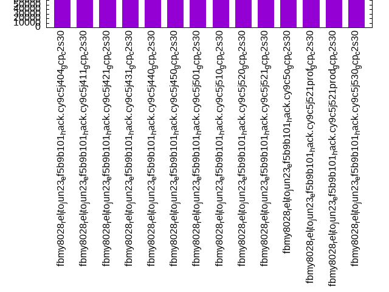

This is a report for the insert benchmark with 4000M docs and 8 client(s). It is generated by scripts (bash, awk, sed) and Tufte might not be impressed. An overview of the insert benchmark is here and a short update is here. Below, by DBMS, I mean DBMS+version.config. An example is my8020.c10b40 where my means MySQL, 8020 is version 8.0.20 and c10b40 is the name for the configuration file.
The test server is a c2-standard-30 from GCP with 15 cores, hyperthreads disabled, 120G RAM, XFS + SW RAID 0 on 4 NVMe devices (1.5TB). The benchmark was run with 8 client and there were 1 or 3 connections per client (1 for queries or inserts without rate limits, 1+1 for rate limited inserts+deletes). There are 8 tables, client per table. It loads 500M rows per table without secondary indexes, creates secondary indexes, then inserts 100M rows with a delete per insert to avoid growing the table. It then does 3 read+write tests for 1800s each that do queries as fast as possible with 100, 500 and then 1000 inserts/second/client concurrent with the queries and 1000 deletes/second to avoid growing the table. The database is larger than memory.
The tested DBMS are:
The numbers are inserts/s for l.i0 and l.i1, indexed docs (or rows) /s for l.x and queries/s for q100, q500, q1000. The values are the average rate over the entire test for inserts (IPS) and queries (QPS). The range of values for IPS and QPS is split into 3 parts: bottom 25%, middle 50%, top 25%. Values in the bottom 25% have a red background, values in the top 25% have a green background and values in the middle have no color. A gray background is used for values that can be ignored because the DBMS did not sustain the target insert rate. Red backgrounds are not used when the minimum value is within 80% of the max value.
| dbms | l.i0 | l.x | l.i1 | q100.1 | q500.1 | q1000.1 |
|---|---|---|---|---|---|---|
| fbmy8028_rel_lto_jun23_ef5b9b101_hack.cy9c5j404_gcp_c2s30 | 545479 | 619402 | 83273 | 31457 | 31796 | 30424 |
| fbmy8028_rel_lto_jun23_ef5b9b101_hack.cy9c5j411_gcp_c2s30 | 546075 | 622778 | 84379 | 31647 | 32086 | 30174 |
| fbmy8028_rel_lto_jun23_ef5b9b101_hack.cy9c5j421_gcp_c2s30 | 555942 | 620459 | 84522 | 31748 | 31262 | 30682 |
| fbmy8028_rel_lto_jun23_ef5b9b101_hack.cy9c5j431_gcp_c2s30 | 559206 | 624820 | 85233 | 31673 | 32246 | 30931 |
| fbmy8028_rel_lto_jun23_ef5b9b101_hack.cy9c5j440_gcp_c2s30 | 558893 | 626582 | 86787 | 31226 | 32182 | 30838 |
| fbmy8028_rel_lto_jun23_ef5b9b101_hack.cy9c5j450_gcp_c2s30 | 562509 | 615495 | 85782 | 31374 | 31972 | 30736 |
| fbmy8028_rel_lto_jun23_ef5b9b101_hack.cy9c5j501_gcp_c2s30 | 554477 | 644138 | 84890 | 31947 | 32547 | 30866 |
| fbmy8028_rel_lto_jun23_ef5b9b101_hack.cy9c5j510_gcp_c2s30 | 556638 | 640118 | 85653 | 31797 | 32278 | 30776 |
| fbmy8028_rel_lto_jun23_ef5b9b101_hack.cy9c5j520_gcp_c2s30 | 559519 | 625211 | 85097 | 31281 | 31922 | 30799 |
| fbmy8028_rel_lto_jun23_ef5b9b101_hack.cy9c5j521_gcp_c2s30 | 558114 | 641042 | 85025 | 31176 | 31701 | 30628 |
| fbmy8028_rel_lto_jun23_ef5b9b101_hack.cy9c5o_gcp_c2s30 | 555170 | 638688 | 84397 | 31101 | 31648 | 30007 |
| fbmy8028_rel_lto_jun23_ef5b9b101_hack.cy9c5j521prof_gcp_c2s30 | 567215 | 666683 | 87336 | 32258 | 32533 | 31100 |
| fbmy8028_rel_lto_jun23_ef5b9b101_hack.cy9c5j521prod_gcp_c2s30 | 565691 | 656615 | 87146 | 32457 | 33063 | 31453 |
| fbmy8028_rel_lto_jun23_ef5b9b101_hack.cy9c5j530_gcp_c2s30 | 557802 | 626975 | 85025 | 31581 | 31763 | 30527 |
This table has relative throughput, throughput for the DBMS relative to the DBMS in the first line, using the absolute throughput from the previous table. Values less than 0.95 have a yellow background. Values greater than 1.05 have a blue background.
| dbms | l.i0 | l.x | l.i1 | q100.1 | q500.1 | q1000.1 |
|---|---|---|---|---|---|---|
| fbmy8028_rel_lto_jun23_ef5b9b101_hack.cy9c5j404_gcp_c2s30 | 1.00 | 1.00 | 1.00 | 1.00 | 1.00 | 1.00 |
| fbmy8028_rel_lto_jun23_ef5b9b101_hack.cy9c5j411_gcp_c2s30 | 1.00 | 1.01 | 1.01 | 1.01 | 1.01 | 0.99 |
| fbmy8028_rel_lto_jun23_ef5b9b101_hack.cy9c5j421_gcp_c2s30 | 1.02 | 1.00 | 1.01 | 1.01 | 0.98 | 1.01 |
| fbmy8028_rel_lto_jun23_ef5b9b101_hack.cy9c5j431_gcp_c2s30 | 1.03 | 1.01 | 1.02 | 1.01 | 1.01 | 1.02 |
| fbmy8028_rel_lto_jun23_ef5b9b101_hack.cy9c5j440_gcp_c2s30 | 1.02 | 1.01 | 1.04 | 0.99 | 1.01 | 1.01 |
| fbmy8028_rel_lto_jun23_ef5b9b101_hack.cy9c5j450_gcp_c2s30 | 1.03 | 0.99 | 1.03 | 1.00 | 1.01 | 1.01 |
| fbmy8028_rel_lto_jun23_ef5b9b101_hack.cy9c5j501_gcp_c2s30 | 1.02 | 1.04 | 1.02 | 1.02 | 1.02 | 1.01 |
| fbmy8028_rel_lto_jun23_ef5b9b101_hack.cy9c5j510_gcp_c2s30 | 1.02 | 1.03 | 1.03 | 1.01 | 1.02 | 1.01 |
| fbmy8028_rel_lto_jun23_ef5b9b101_hack.cy9c5j520_gcp_c2s30 | 1.03 | 1.01 | 1.02 | 0.99 | 1.00 | 1.01 |
| fbmy8028_rel_lto_jun23_ef5b9b101_hack.cy9c5j521_gcp_c2s30 | 1.02 | 1.03 | 1.02 | 0.99 | 1.00 | 1.01 |
| fbmy8028_rel_lto_jun23_ef5b9b101_hack.cy9c5o_gcp_c2s30 | 1.02 | 1.03 | 1.01 | 0.99 | 1.00 | 0.99 |
| fbmy8028_rel_lto_jun23_ef5b9b101_hack.cy9c5j521prof_gcp_c2s30 | 1.04 | 1.08 | 1.05 | 1.03 | 1.02 | 1.02 |
| fbmy8028_rel_lto_jun23_ef5b9b101_hack.cy9c5j521prod_gcp_c2s30 | 1.04 | 1.06 | 1.05 | 1.03 | 1.04 | 1.03 |
| fbmy8028_rel_lto_jun23_ef5b9b101_hack.cy9c5j530_gcp_c2s30 | 1.02 | 1.01 | 1.02 | 1.00 | 1.00 | 1.00 |
This lists the average rate of inserts/s for the tests that do inserts concurrent with queries. For such tests the query rate is listed in the table above. The read+write tests are setup so that the insert rate should match the target rate every second. Cells that are not at least 95% of the target have a red background to indicate a failure to satisfy the target.
| dbms | q100.1 | q500.1 | q1000.1 |
|---|---|---|---|
| fbmy8028_rel_lto_jun23_ef5b9b101_hack.cy9c5j404_gcp_c2s30 | 790 | 3958 | 7934 |
| fbmy8028_rel_lto_jun23_ef5b9b101_hack.cy9c5j411_gcp_c2s30 | 790 | 3958 | 7930 |
| fbmy8028_rel_lto_jun23_ef5b9b101_hack.cy9c5j421_gcp_c2s30 | 790 | 3958 | 7930 |
| fbmy8028_rel_lto_jun23_ef5b9b101_hack.cy9c5j431_gcp_c2s30 | 790 | 3960 | 7934 |
| fbmy8028_rel_lto_jun23_ef5b9b101_hack.cy9c5j440_gcp_c2s30 | 789 | 3947 | 7930 |
| fbmy8028_rel_lto_jun23_ef5b9b101_hack.cy9c5j450_gcp_c2s30 | 789 | 3947 | 7930 |
| fbmy8028_rel_lto_jun23_ef5b9b101_hack.cy9c5j501_gcp_c2s30 | 791 | 3958 | 7934 |
| fbmy8028_rel_lto_jun23_ef5b9b101_hack.cy9c5j510_gcp_c2s30 | 788 | 3950 | 7921 |
| fbmy8028_rel_lto_jun23_ef5b9b101_hack.cy9c5j520_gcp_c2s30 | 789 | 3952 | 7930 |
| fbmy8028_rel_lto_jun23_ef5b9b101_hack.cy9c5j521_gcp_c2s30 | 790 | 3958 | 7925 |
| fbmy8028_rel_lto_jun23_ef5b9b101_hack.cy9c5o_gcp_c2s30 | 791 | 3962 | 7934 |
| fbmy8028_rel_lto_jun23_ef5b9b101_hack.cy9c5j521prof_gcp_c2s30 | 791 | 3965 | 7938 |
| fbmy8028_rel_lto_jun23_ef5b9b101_hack.cy9c5j521prod_gcp_c2s30 | 789 | 3956 | 7930 |
| fbmy8028_rel_lto_jun23_ef5b9b101_hack.cy9c5j530_gcp_c2s30 | 789 | 3954 | 7930 |
| target | 800 | 4000 | 8000 |
l.i0: load without secondary indexes. Graphs for performance per 1-second interval are here.
Average throughput:
Insert response time histogram: each cell has the percentage of responses that take <= the time in the header and max is the max response time in seconds. For the max column values in the top 25% of the range have a red background and in the bottom 25% of the range have a green background. The red background is not used when the min value is within 80% of the max value.
| dbms | 256us | 1ms | 4ms | 16ms | 64ms | 256ms | 1s | 4s | 16s | gt | max |
|---|---|---|---|---|---|---|---|---|---|---|---|
| fbmy8028_rel_lto_jun23_ef5b9b101_hack.cy9c5j404_gcp_c2s30 | 5.960 | 93.791 | 0.217 | 0.014 | 0.017 | 0.001 | nonzero | 1.226 | |||
| fbmy8028_rel_lto_jun23_ef5b9b101_hack.cy9c5j411_gcp_c2s30 | 6.600 | 93.162 | 0.208 | 0.012 | 0.017 | 0.001 | 0.697 | ||||
| fbmy8028_rel_lto_jun23_ef5b9b101_hack.cy9c5j421_gcp_c2s30 | 6.938 | 92.819 | 0.211 | 0.014 | 0.017 | 0.001 | 0.791 | ||||
| fbmy8028_rel_lto_jun23_ef5b9b101_hack.cy9c5j431_gcp_c2s30 | 6.968 | 92.859 | 0.142 | 0.012 | 0.017 | 0.001 | 0.580 | ||||
| fbmy8028_rel_lto_jun23_ef5b9b101_hack.cy9c5j440_gcp_c2s30 | 7.793 | 92.048 | 0.131 | 0.010 | 0.017 | 0.001 | 0.394 | ||||
| fbmy8028_rel_lto_jun23_ef5b9b101_hack.cy9c5j450_gcp_c2s30 | 7.143 | 92.694 | 0.136 | 0.010 | 0.017 | 0.001 | 0.578 | ||||
| fbmy8028_rel_lto_jun23_ef5b9b101_hack.cy9c5j501_gcp_c2s30 | 6.845 | 92.990 | 0.137 | 0.010 | 0.017 | 0.001 | 0.408 | ||||
| fbmy8028_rel_lto_jun23_ef5b9b101_hack.cy9c5j510_gcp_c2s30 | 7.296 | 92.535 | 0.141 | 0.010 | 0.017 | 0.001 | 0.395 | ||||
| fbmy8028_rel_lto_jun23_ef5b9b101_hack.cy9c5j520_gcp_c2s30 | 7.384 | 92.457 | 0.133 | 0.009 | 0.016 | 0.001 | 0.388 | ||||
| fbmy8028_rel_lto_jun23_ef5b9b101_hack.cy9c5j521_gcp_c2s30 | 7.091 | 92.749 | 0.135 | 0.009 | 0.016 | 0.001 | 0.436 | ||||
| fbmy8028_rel_lto_jun23_ef5b9b101_hack.cy9c5o_gcp_c2s30 | 7.444 | 92.386 | 0.140 | 0.011 | 0.017 | 0.001 | nonzero | 1.183 | |||
| fbmy8028_rel_lto_jun23_ef5b9b101_hack.cy9c5j521prof_gcp_c2s30 | 7.728 | 92.107 | 0.138 | 0.011 | 0.016 | 0.001 | 0.556 | ||||
| fbmy8028_rel_lto_jun23_ef5b9b101_hack.cy9c5j521prod_gcp_c2s30 | 7.469 | 92.369 | 0.134 | 0.011 | 0.017 | 0.001 | 0.369 | ||||
| fbmy8028_rel_lto_jun23_ef5b9b101_hack.cy9c5j530_gcp_c2s30 | 7.387 | 92.445 | 0.139 | 0.010 | 0.017 | 0.001 | 0.426 |
Performance metrics for the DBMS listed above. Some are normalized by throughput, others are not. Legend for results is here.
ips qps rps rmbps wps wmbps rpq rkbpq wpi wkbpi csps cpups cspq cpupq dbgb1 dbgb2 rss maxop p50 p99 tag 545479 0 0 0.0 573.8 118.3 0.000 0.000 0.001 0.222 64933 73.1 0.119 20 125.1 125.3 28.5 1.226 69822 47649 4000m.fbmy8028_rel_lto_jun23_ef5b9b101_hack.cy9c5j404_gcp_c2s30 546075 0 0 0.0 566.8 119.0 0.000 0.000 0.001 0.223 64900 72.8 0.119 20 125.3 125.5 27.8 0.697 69325 49247 4000m.fbmy8028_rel_lto_jun23_ef5b9b101_hack.cy9c5j411_gcp_c2s30 555942 0 0 0.0 576.3 118.9 0.000 0.000 0.001 0.219 65733 73.1 0.118 20 125.0 125.2 27.4 0.791 70823 48465 4000m.fbmy8028_rel_lto_jun23_ef5b9b101_hack.cy9c5j421_gcp_c2s30 559206 0 0 0.0 576.4 128.5 0.000 0.000 0.001 0.235 66036 73.4 0.118 20 125.2 127.1 27.9 0.580 71422 49346 4000m.fbmy8028_rel_lto_jun23_ef5b9b101_hack.cy9c5j431_gcp_c2s30 558893 0 0 0.0 574.2 133.4 0.000 0.000 0.001 0.244 65802 73.6 0.118 20 125.4 125.6 28.3 0.394 71747 49946 4000m.fbmy8028_rel_lto_jun23_ef5b9b101_hack.cy9c5j440_gcp_c2s30 562509 0 0 0.0 569.3 130.7 0.000 0.000 0.001 0.238 66253 73.6 0.118 20 125.4 125.6 27.4 0.578 71448 50545 4000m.fbmy8028_rel_lto_jun23_ef5b9b101_hack.cy9c5j450_gcp_c2s30 554477 0 0 0.0 578.2 130.2 0.000 0.000 0.001 0.240 65141 73.9 0.117 20 125.5 127.4 27.1 0.408 71722 50545 4000m.fbmy8028_rel_lto_jun23_ef5b9b101_hack.cy9c5j501_gcp_c2s30 556638 0 0 0.1 581.3 130.3 0.000 0.000 0.001 0.240 65515 73.8 0.118 20 124.2 126.1 27.5 0.395 71722 50046 4000m.fbmy8028_rel_lto_jun23_ef5b9b101_hack.cy9c5j510_gcp_c2s30 559519 0 0 0.0 569.7 130.3 0.000 0.000 0.001 0.239 65594 73.7 0.117 20 124.9 125.2 26.1 0.388 71222 50464 4000m.fbmy8028_rel_lto_jun23_ef5b9b101_hack.cy9c5j520_gcp_c2s30 558114 0 0 0.0 574.1 128.5 0.000 0.000 0.001 0.236 65554 73.7 0.117 20 125.4 125.6 26.3 0.436 71649 49646 4000m.fbmy8028_rel_lto_jun23_ef5b9b101_hack.cy9c5j521_gcp_c2s30 555170 0 0 0.0 575.1 129.0 0.000 0.000 0.001 0.238 65447 73.4 0.118 20 125.3 125.5 26.8 1.183 70224 48647 4000m.fbmy8028_rel_lto_jun23_ef5b9b101_hack.cy9c5o_gcp_c2s30 567215 0 0 0.0 582.0 130.0 0.000 0.000 0.001 0.235 66536 74.1 0.117 20 124.4 126.3 26.3 0.556 72032 50561 4000m.fbmy8028_rel_lto_jun23_ef5b9b101_hack.cy9c5j521prof_gcp_c2s30 565691 0 0 0.0 581.2 129.4 0.000 0.000 0.001 0.234 66345 73.9 0.117 20 125.0 125.3 26.5 0.369 72221 51140 4000m.fbmy8028_rel_lto_jun23_ef5b9b101_hack.cy9c5j521prod_gcp_c2s30 557802 0 1 0.2 585.7 131.6 0.000 0.000 0.001 0.242 65883 73.9 0.118 20 125.3 125.5 27.1 0.426 72647 51444 4000m.fbmy8028_rel_lto_jun23_ef5b9b101_hack.cy9c5j530_gcp_c2s30
l.x: create secondary indexes.
Average throughput:
Performance metrics for the DBMS listed above. Some are normalized by throughput, others are not. Legend for results is here.
ips qps rps rmbps wps wmbps rpq rkbpq wpi wkbpi csps cpups cspq cpupq dbgb1 dbgb2 rss maxop p50 p99 tag 619402 0 450 86.7 231.4 73.5 0.001 0.143 0.000 0.121 1814 50.1 0.003 12 257.4 257.6 67.0 0.002 NA NA 4000m.fbmy8028_rel_lto_jun23_ef5b9b101_hack.cy9c5j404_gcp_c2s30 622778 0 453 85.3 234.8 72.2 0.001 0.140 0.000 0.119 1768 50.2 0.003 12 257.6 257.8 66.3 0.002 NA NA 4000m.fbmy8028_rel_lto_jun23_ef5b9b101_hack.cy9c5j411_gcp_c2s30 620459 0 453 85.5 234.2 72.7 0.001 0.141 0.000 0.120 1786 50.3 0.003 12 257.4 257.6 66.4 0.002 NA NA 4000m.fbmy8028_rel_lto_jun23_ef5b9b101_hack.cy9c5j421_gcp_c2s30 624820 0 456 86.0 234.1 71.4 0.001 0.141 0.000 0.117 1811 50.2 0.003 12 257.6 257.8 66.2 0.104 NA NA 4000m.fbmy8028_rel_lto_jun23_ef5b9b101_hack.cy9c5j431_gcp_c2s30 626582 0 458 86.8 235.7 71.7 0.001 0.142 0.000 0.117 1861 50.3 0.003 12 257.8 258.0 66.0 0.002 NA NA 4000m.fbmy8028_rel_lto_jun23_ef5b9b101_hack.cy9c5j440_gcp_c2s30 615495 0 445 84.7 233.2 69.6 0.001 0.141 0.000 0.116 1790 50.2 0.003 12 257.8 258.0 66.1 0.002 NA NA 4000m.fbmy8028_rel_lto_jun23_ef5b9b101_hack.cy9c5j450_gcp_c2s30 644138 0 473 89.2 240.3 74.0 0.001 0.142 0.000 0.118 1867 50.4 0.003 12 257.8 258.1 70.6 0.002 NA NA 4000m.fbmy8028_rel_lto_jun23_ef5b9b101_hack.cy9c5j501_gcp_c2s30 640118 0 463 87.9 240.8 72.2 0.001 0.141 0.000 0.116 1873 50.3 0.003 12 256.6 256.8 71.4 0.002 NA NA 4000m.fbmy8028_rel_lto_jun23_ef5b9b101_hack.cy9c5j510_gcp_c2s30 625211 0 466 87.9 233.1 72.4 0.001 0.144 0.000 0.119 1803 50.3 0.003 12 257.3 257.5 70.0 0.003 NA NA 4000m.fbmy8028_rel_lto_jun23_ef5b9b101_hack.cy9c5j520_gcp_c2s30 641042 0 478 89.9 241.8 72.7 0.001 0.144 0.000 0.116 1968 50.2 0.003 12 257.7 257.9 69.7 0.002 NA NA 4000m.fbmy8028_rel_lto_jun23_ef5b9b101_hack.cy9c5j521_gcp_c2s30 638688 0 471 88.3 241.9 72.2 0.001 0.141 0.000 0.116 1986 50.0 0.003 12 257.6 257.9 69.9 0.002 NA NA 4000m.fbmy8028_rel_lto_jun23_ef5b9b101_hack.cy9c5o_gcp_c2s30 666683 0 479 91.0 251.3 75.4 0.001 0.140 0.000 0.116 2044 50.1 0.003 11 256.8 258.7 69.9 0.002 NA NA 4000m.fbmy8028_rel_lto_jun23_ef5b9b101_hack.cy9c5j521prof_gcp_c2s30 656615 0 481 90.4 248.1 74.7 0.001 0.141 0.000 0.116 1982 50.5 0.003 12 257.4 257.6 63.0 0.003 NA NA 4000m.fbmy8028_rel_lto_jun23_ef5b9b101_hack.cy9c5j521prod_gcp_c2s30 626975 0 459 86.2 236.5 72.2 0.001 0.141 0.000 0.118 1837 50.0 0.003 12 257.6 257.8 62.6 0.003 NA NA 4000m.fbmy8028_rel_lto_jun23_ef5b9b101_hack.cy9c5j530_gcp_c2s30
l.i1: continue load after secondary indexes created. Graphs for performance per 1-second interval are here.
Average throughput:
Insert response time histogram: each cell has the percentage of responses that take <= the time in the header and max is the max response time in seconds. For the max column values in the top 25% of the range have a red background and in the bottom 25% of the range have a green background. The red background is not used when the min value is within 80% of the max value.
| dbms | 256us | 1ms | 4ms | 16ms | 64ms | 256ms | 1s | 4s | 16s | gt | max |
|---|---|---|---|---|---|---|---|---|---|---|---|
| fbmy8028_rel_lto_jun23_ef5b9b101_hack.cy9c5j404_gcp_c2s30 | 0.008 | 35.285 | 64.510 | 0.173 | 0.021 | 0.003 | nonzero | 2.841 | |||
| fbmy8028_rel_lto_jun23_ef5b9b101_hack.cy9c5j411_gcp_c2s30 | 0.008 | 37.875 | 61.930 | 0.161 | 0.022 | 0.003 | nonzero | 2.180 | |||
| fbmy8028_rel_lto_jun23_ef5b9b101_hack.cy9c5j421_gcp_c2s30 | 0.010 | 37.490 | 62.316 | 0.160 | 0.021 | 0.003 | nonzero | 7.727 | |||
| fbmy8028_rel_lto_jun23_ef5b9b101_hack.cy9c5j431_gcp_c2s30 | 0.012 | 37.997 | 61.829 | 0.145 | 0.016 | 0.002 | 0.492 | ||||
| fbmy8028_rel_lto_jun23_ef5b9b101_hack.cy9c5j440_gcp_c2s30 | 0.023 | 41.713 | 58.095 | 0.150 | 0.017 | 0.002 | 0.400 | ||||
| fbmy8028_rel_lto_jun23_ef5b9b101_hack.cy9c5j450_gcp_c2s30 | 0.012 | 39.233 | 60.576 | 0.161 | 0.016 | 0.002 | 0.476 | ||||
| fbmy8028_rel_lto_jun23_ef5b9b101_hack.cy9c5j501_gcp_c2s30 | 0.010 | 37.120 | 62.710 | 0.143 | 0.016 | 0.002 | 0.402 | ||||
| fbmy8028_rel_lto_jun23_ef5b9b101_hack.cy9c5j510_gcp_c2s30 | 0.010 | 39.210 | 60.616 | 0.146 | 0.016 | 0.002 | nonzero | 1.369 | |||
| fbmy8028_rel_lto_jun23_ef5b9b101_hack.cy9c5j520_gcp_c2s30 | 0.010 | 37.841 | 61.996 | 0.137 | 0.015 | 0.002 | 0.610 | ||||
| fbmy8028_rel_lto_jun23_ef5b9b101_hack.cy9c5j521_gcp_c2s30 | 0.009 | 37.029 | 62.809 | 0.136 | 0.015 | 0.002 | 0.423 | ||||
| fbmy8028_rel_lto_jun23_ef5b9b101_hack.cy9c5o_gcp_c2s30 | 0.007 | 35.805 | 64.031 | 0.140 | 0.015 | 0.002 | 0.474 | ||||
| fbmy8028_rel_lto_jun23_ef5b9b101_hack.cy9c5j521prof_gcp_c2s30 | 0.014 | 42.360 | 57.470 | 0.137 | 0.017 | 0.002 | 0.562 | ||||
| fbmy8028_rel_lto_jun23_ef5b9b101_hack.cy9c5j521prod_gcp_c2s30 | 0.016 | 42.212 | 57.620 | 0.134 | 0.016 | 0.002 | 0.396 | ||||
| fbmy8028_rel_lto_jun23_ef5b9b101_hack.cy9c5j530_gcp_c2s30 | 0.011 | 37.101 | 62.735 | 0.136 | 0.016 | 0.001 | 0.391 |
Delete response time histogram: each cell has the percentage of responses that take <= the time in the header and max is the max response time in seconds. For the max column values in the top 25% of the range have a red background and in the bottom 25% of the range have a green background. The red background is not used when the min value is within 80% of the max value.
| dbms | 256us | 1ms | 4ms | 16ms | 64ms | 256ms | 1s | 4s | 16s | gt | max |
|---|---|---|---|---|---|---|---|---|---|---|---|
| fbmy8028_rel_lto_jun23_ef5b9b101_hack.cy9c5j404_gcp_c2s30 | 0.013 | 32.205 | 67.402 | 0.340 | 0.036 | 0.003 | nonzero | 3.281 | |||
| fbmy8028_rel_lto_jun23_ef5b9b101_hack.cy9c5j411_gcp_c2s30 | 0.013 | 34.053 | 65.579 | 0.316 | 0.035 | 0.004 | nonzero | 2.180 | |||
| fbmy8028_rel_lto_jun23_ef5b9b101_hack.cy9c5j421_gcp_c2s30 | 0.016 | 34.340 | 65.286 | 0.321 | 0.034 | 0.003 | nonzero | 8.184 | |||
| fbmy8028_rel_lto_jun23_ef5b9b101_hack.cy9c5j431_gcp_c2s30 | 0.019 | 34.329 | 65.312 | 0.309 | 0.029 | 0.002 | 0.493 | ||||
| fbmy8028_rel_lto_jun23_ef5b9b101_hack.cy9c5j440_gcp_c2s30 | 0.023 | 38.342 | 61.314 | 0.292 | 0.028 | 0.002 | 0.401 | ||||
| fbmy8028_rel_lto_jun23_ef5b9b101_hack.cy9c5j450_gcp_c2s30 | 0.023 | 36.081 | 63.551 | 0.313 | 0.030 | 0.002 | 0.480 | ||||
| fbmy8028_rel_lto_jun23_ef5b9b101_hack.cy9c5j501_gcp_c2s30 | 0.019 | 33.944 | 65.704 | 0.302 | 0.028 | 0.002 | 0.400 | ||||
| fbmy8028_rel_lto_jun23_ef5b9b101_hack.cy9c5j510_gcp_c2s30 | 0.016 | 35.942 | 63.713 | 0.298 | 0.028 | 0.002 | nonzero | 1.356 | |||
| fbmy8028_rel_lto_jun23_ef5b9b101_hack.cy9c5j520_gcp_c2s30 | 0.017 | 34.516 | 65.137 | 0.299 | 0.028 | 0.002 | 0.615 | ||||
| fbmy8028_rel_lto_jun23_ef5b9b101_hack.cy9c5j521_gcp_c2s30 | 0.012 | 33.985 | 65.684 | 0.290 | 0.028 | 0.002 | 0.426 | ||||
| fbmy8028_rel_lto_jun23_ef5b9b101_hack.cy9c5o_gcp_c2s30 | 0.016 | 32.863 | 66.798 | 0.293 | 0.028 | 0.002 | 0.545 | ||||
| fbmy8028_rel_lto_jun23_ef5b9b101_hack.cy9c5j521prof_gcp_c2s30 | 0.029 | 38.825 | 60.841 | 0.274 | 0.029 | 0.002 | 0.619 | ||||
| fbmy8028_rel_lto_jun23_ef5b9b101_hack.cy9c5j521prod_gcp_c2s30 | 0.028 | 38.451 | 61.200 | 0.289 | 0.029 | 0.002 | 0.401 | ||||
| fbmy8028_rel_lto_jun23_ef5b9b101_hack.cy9c5j530_gcp_c2s30 | 0.021 | 34.194 | 65.468 | 0.287 | 0.028 | 0.002 | 0.386 |
Performance metrics for the DBMS listed above. Some are normalized by throughput, others are not. Legend for results is here.
ips qps rps rmbps wps wmbps rpq rkbpq wpi wkbpi csps cpups cspq cpupq dbgb1 dbgb2 rss maxop p50 p99 tag 83273 0 455 37.3 772.1 140.7 0.005 0.458 0.009 1.731 49625 68.9 0.596 124 282.7 284.1 69.5 2.841 10389 6743 4000m.fbmy8028_rel_lto_jun23_ef5b9b101_hack.cy9c5j404_gcp_c2s30 84379 0 460 37.7 781.7 144.7 0.005 0.457 0.009 1.756 49924 69.3 0.592 123 283.2 284.6 69.3 2.180 10539 6895 4000m.fbmy8028_rel_lto_jun23_ef5b9b101_hack.cy9c5j411_gcp_c2s30 84522 0 450 38.2 777.6 146.7 0.005 0.463 0.009 1.777 50055 69.1 0.592 123 285.4 286.8 69.7 7.727 10539 6945 4000m.fbmy8028_rel_lto_jun23_ef5b9b101_hack.cy9c5j421_gcp_c2s30 85233 0 459 38.7 778.0 153.2 0.005 0.465 0.009 1.840 50551 69.1 0.593 122 283.2 284.6 69.8 0.492 10643 7292 4000m.fbmy8028_rel_lto_jun23_ef5b9b101_hack.cy9c5j431_gcp_c2s30 86787 0 471 41.3 788.0 154.6 0.005 0.487 0.009 1.825 51042 70.0 0.588 121 284.3 285.7 77.1 0.400 10788 7442 4000m.fbmy8028_rel_lto_jun23_ef5b9b101_hack.cy9c5j440_gcp_c2s30 85782 0 469 40.8 785.1 154.9 0.005 0.487 0.009 1.849 50588 69.5 0.590 122 282.5 283.9 77.3 0.476 10738 7242 4000m.fbmy8028_rel_lto_jun23_ef5b9b101_hack.cy9c5j450_gcp_c2s30 84890 0 439 33.6 781.0 151.9 0.005 0.405 0.009 1.833 50118 69.7 0.590 123 284.7 286.1 70.6 0.402 10592 7392 4000m.fbmy8028_rel_lto_jun23_ef5b9b101_hack.cy9c5j501_gcp_c2s30 85653 0 429 33.3 782.5 150.1 0.005 0.399 0.009 1.795 50177 69.8 0.586 122 283.1 284.5 71.4 1.369 10738 7142 4000m.fbmy8028_rel_lto_jun23_ef5b9b101_hack.cy9c5j510_gcp_c2s30 85097 0 446 33.0 777.4 150.0 0.005 0.397 0.009 1.804 50451 69.3 0.593 122 283.0 284.4 68.7 0.610 10688 7192 4000m.fbmy8028_rel_lto_jun23_ef5b9b101_hack.cy9c5j520_gcp_c2s30 85025 0 447 33.1 782.8 149.8 0.005 0.399 0.009 1.804 50255 69.3 0.591 122 282.8 284.2 68.6 0.423 10686 7142 4000m.fbmy8028_rel_lto_jun23_ef5b9b101_hack.cy9c5j521_gcp_c2s30 84397 0 437 32.5 778.7 148.4 0.005 0.394 0.009 1.801 50084 69.2 0.593 123 282.9 284.2 68.6 0.474 10542 7146 4000m.fbmy8028_rel_lto_jun23_ef5b9b101_hack.cy9c5o_gcp_c2s30 87336 0 448 33.8 801.7 151.2 0.005 0.396 0.009 1.772 50993 70.3 0.584 121 282.8 284.2 68.7 0.562 10888 7392 4000m.fbmy8028_rel_lto_jun23_ef5b9b101_hack.cy9c5j521prof_gcp_c2s30 87146 0 452 33.8 795.2 149.4 0.005 0.398 0.009 1.755 51246 69.9 0.588 120 283.0 284.4 61.6 0.396 10838 7392 4000m.fbmy8028_rel_lto_jun23_ef5b9b101_hack.cy9c5j521prod_gcp_c2s30 85025 0 434 32.7 778.0 150.0 0.005 0.394 0.009 1.807 50612 68.8 0.595 121 282.9 284.3 61.0 0.391 10688 7142 4000m.fbmy8028_rel_lto_jun23_ef5b9b101_hack.cy9c5j530_gcp_c2s30
q100.1: range queries with 100 insert/s per client. Graphs for performance per 1-second interval are here.
Average throughput:
Query response time histogram: each cell has the percentage of responses that take <= the time in the header and max is the max response time in seconds. For max values in the top 25% of the range have a red background and in the bottom 25% of the range have a green background. The red background is not used when the min value is within 80% of the max value.
| dbms | 256us | 1ms | 4ms | 16ms | 64ms | 256ms | 1s | 4s | 16s | gt | max |
|---|---|---|---|---|---|---|---|---|---|---|---|
| fbmy8028_rel_lto_jun23_ef5b9b101_hack.cy9c5j404_gcp_c2s30 | 73.585 | 26.050 | 0.363 | 0.001 | nonzero | 0.039 | |||||
| fbmy8028_rel_lto_jun23_ef5b9b101_hack.cy9c5j411_gcp_c2s30 | 74.982 | 24.670 | 0.347 | 0.001 | nonzero | 0.058 | |||||
| fbmy8028_rel_lto_jun23_ef5b9b101_hack.cy9c5j421_gcp_c2s30 | 75.238 | 24.486 | 0.275 | 0.001 | nonzero | 0.053 | |||||
| fbmy8028_rel_lto_jun23_ef5b9b101_hack.cy9c5j431_gcp_c2s30 | 75.587 | 24.018 | 0.393 | 0.002 | nonzero | 0.056 | |||||
| fbmy8028_rel_lto_jun23_ef5b9b101_hack.cy9c5j440_gcp_c2s30 | 73.530 | 25.963 | 0.506 | 0.001 | nonzero | 0.034 | |||||
| fbmy8028_rel_lto_jun23_ef5b9b101_hack.cy9c5j450_gcp_c2s30 | 74.219 | 25.282 | 0.497 | 0.001 | nonzero | 0.032 | |||||
| fbmy8028_rel_lto_jun23_ef5b9b101_hack.cy9c5j501_gcp_c2s30 | 76.013 | 23.630 | 0.355 | 0.001 | nonzero | nonzero | 0.095 | ||||
| fbmy8028_rel_lto_jun23_ef5b9b101_hack.cy9c5j510_gcp_c2s30 | 75.817 | 23.796 | 0.386 | 0.001 | nonzero | 0.055 | |||||
| fbmy8028_rel_lto_jun23_ef5b9b101_hack.cy9c5j520_gcp_c2s30 | 73.602 | 26.032 | 0.364 | 0.001 | nonzero | 0.052 | |||||
| fbmy8028_rel_lto_jun23_ef5b9b101_hack.cy9c5j521_gcp_c2s30 | 72.856 | 26.782 | 0.361 | 0.001 | nonzero | nonzero | 0.075 | ||||
| fbmy8028_rel_lto_jun23_ef5b9b101_hack.cy9c5o_gcp_c2s30 | 72.867 | 26.750 | 0.381 | 0.001 | nonzero | 0.045 | |||||
| fbmy8028_rel_lto_jun23_ef5b9b101_hack.cy9c5j521prof_gcp_c2s30 | 75.801 | 23.922 | 0.276 | 0.001 | nonzero | 0.051 | |||||
| fbmy8028_rel_lto_jun23_ef5b9b101_hack.cy9c5j521prod_gcp_c2s30 | 77.096 | 22.670 | 0.233 | 0.001 | nonzero | 0.055 | |||||
| fbmy8028_rel_lto_jun23_ef5b9b101_hack.cy9c5j530_gcp_c2s30 | 74.278 | 25.476 | 0.244 | 0.001 | nonzero | nonzero | 0.083 |
Insert response time histogram: each cell has the percentage of responses that take <= the time in the header and max is the max response time in seconds. For max values in the top 25% of the range have a red background and in the bottom 25% of the range have a green background. The red background is not used when the min value is within 80% of the max value.
| dbms | 256us | 1ms | 4ms | 16ms | 64ms | 256ms | 1s | 4s | 16s | gt | max |
|---|---|---|---|---|---|---|---|---|---|---|---|
| fbmy8028_rel_lto_jun23_ef5b9b101_hack.cy9c5j404_gcp_c2s30 | 0.236 | 99.722 | 0.017 | 0.024 | 0.038 | ||||||
| fbmy8028_rel_lto_jun23_ef5b9b101_hack.cy9c5j411_gcp_c2s30 | 1.556 | 98.420 | 0.021 | 0.003 | 0.016 | ||||||
| fbmy8028_rel_lto_jun23_ef5b9b101_hack.cy9c5j421_gcp_c2s30 | 0.882 | 99.104 | 0.014 | 0.015 | |||||||
| fbmy8028_rel_lto_jun23_ef5b9b101_hack.cy9c5j431_gcp_c2s30 | 3.139 | 96.854 | 0.003 | 0.003 | 0.022 | ||||||
| fbmy8028_rel_lto_jun23_ef5b9b101_hack.cy9c5j440_gcp_c2s30 | 2.024 | 97.944 | 0.031 | 0.010 | |||||||
| fbmy8028_rel_lto_jun23_ef5b9b101_hack.cy9c5j450_gcp_c2s30 | 0.844 | 99.125 | 0.031 | 0.010 | |||||||
| fbmy8028_rel_lto_jun23_ef5b9b101_hack.cy9c5j501_gcp_c2s30 | 3.410 | 96.576 | 0.014 | 0.007 | |||||||
| fbmy8028_rel_lto_jun23_ef5b9b101_hack.cy9c5j510_gcp_c2s30 | 1.278 | 98.719 | 0.003 | 0.005 | |||||||
| fbmy8028_rel_lto_jun23_ef5b9b101_hack.cy9c5j520_gcp_c2s30 | 1.562 | 98.438 | 0.004 | ||||||||
| fbmy8028_rel_lto_jun23_ef5b9b101_hack.cy9c5j521_gcp_c2s30 | 2.628 | 97.361 | 0.010 | 0.008 | |||||||
| fbmy8028_rel_lto_jun23_ef5b9b101_hack.cy9c5o_gcp_c2s30 | 2.115 | 97.840 | 0.045 | 0.007 | |||||||
| fbmy8028_rel_lto_jun23_ef5b9b101_hack.cy9c5j521prof_gcp_c2s30 | 3.469 | 96.524 | 0.007 | 0.005 | |||||||
| fbmy8028_rel_lto_jun23_ef5b9b101_hack.cy9c5j521prod_gcp_c2s30 | 4.424 | 95.566 | 0.010 | 0.007 | |||||||
| fbmy8028_rel_lto_jun23_ef5b9b101_hack.cy9c5j530_gcp_c2s30 | 0.521 | 99.333 | 0.132 | 0.014 | 0.020 |
Delete response time histogram: each cell has the percentage of responses that take <= the time in the header and max is the max response time in seconds. For max values in the top 25% of the range have a red background and in the bottom 25% of the range have a green background. The red background is not used when the min value is within 80% of the max value.
| dbms | 256us | 1ms | 4ms | 16ms | 64ms | 256ms | 1s | 4s | 16s | gt | max |
|---|---|---|---|---|---|---|---|---|---|---|---|
| fbmy8028_rel_lto_jun23_ef5b9b101_hack.cy9c5j404_gcp_c2s30 | 2.438 | 97.507 | 0.031 | 0.024 | 0.039 | ||||||
| fbmy8028_rel_lto_jun23_ef5b9b101_hack.cy9c5j411_gcp_c2s30 | 1.920 | 98.042 | 0.024 | 0.014 | 0.026 | ||||||
| fbmy8028_rel_lto_jun23_ef5b9b101_hack.cy9c5j421_gcp_c2s30 | 5.531 | 94.438 | 0.028 | 0.003 | 0.019 | ||||||
| fbmy8028_rel_lto_jun23_ef5b9b101_hack.cy9c5j431_gcp_c2s30 | 4.983 | 94.986 | 0.028 | 0.003 | 0.025 | ||||||
| fbmy8028_rel_lto_jun23_ef5b9b101_hack.cy9c5j440_gcp_c2s30 | 4.424 | 95.524 | 0.052 | 0.014 | |||||||
| fbmy8028_rel_lto_jun23_ef5b9b101_hack.cy9c5j450_gcp_c2s30 | 5.448 | 94.528 | 0.024 | 0.014 | |||||||
| fbmy8028_rel_lto_jun23_ef5b9b101_hack.cy9c5j501_gcp_c2s30 | 5.069 | 94.889 | 0.038 | 0.003 | 0.024 | ||||||
| fbmy8028_rel_lto_jun23_ef5b9b101_hack.cy9c5j510_gcp_c2s30 | 6.747 | 93.247 | 0.007 | 0.005 | |||||||
| fbmy8028_rel_lto_jun23_ef5b9b101_hack.cy9c5j520_gcp_c2s30 | 5.177 | 94.809 | 0.007 | 0.007 | 0.032 | ||||||
| fbmy8028_rel_lto_jun23_ef5b9b101_hack.cy9c5j521_gcp_c2s30 | 6.250 | 93.733 | 0.017 | 0.008 | |||||||
| fbmy8028_rel_lto_jun23_ef5b9b101_hack.cy9c5o_gcp_c2s30 | 7.660 | 92.306 | 0.035 | 0.011 | |||||||
| fbmy8028_rel_lto_jun23_ef5b9b101_hack.cy9c5j521prof_gcp_c2s30 | 9.149 | 90.837 | 0.010 | 0.003 | 0.017 | ||||||
| fbmy8028_rel_lto_jun23_ef5b9b101_hack.cy9c5j521prod_gcp_c2s30 | 6.806 | 93.181 | 0.014 | 0.007 | |||||||
| fbmy8028_rel_lto_jun23_ef5b9b101_hack.cy9c5j530_gcp_c2s30 | 3.733 | 96.108 | 0.149 | 0.010 | 0.053 |
Performance metrics for the DBMS listed above. Some are normalized by throughput, others are not. Legend for results is here.
ips qps rps rmbps wps wmbps rpq rkbpq wpi wkbpi csps cpups cspq cpupq dbgb1 dbgb2 rss maxop p50 p99 tag 790 31457 1524 14.1 26.7 4.3 0.048 0.459 0.034 5.534 126345 53.1 4.016 253 281.5 283.2 68.8 0.039 3964 1902 4000m.fbmy8028_rel_lto_jun23_ef5b9b101_hack.cy9c5j404_gcp_c2s30 790 31647 1592 15.0 29.5 4.6 0.050 0.487 0.037 5.953 127384 53.3 4.025 253 281.5 283.2 69.4 0.058 4381 2142 4000m.fbmy8028_rel_lto_jun23_ef5b9b101_hack.cy9c5j411_gcp_c2s30 790 31748 1436 13.6 27.5 4.2 0.045 0.439 0.035 5.436 127881 53.1 4.028 251 281.6 283.3 69.4 0.053 4012 1902 4000m.fbmy8028_rel_lto_jun23_ef5b9b101_hack.cy9c5j421_gcp_c2s30 790 31673 1540 15.0 29.6 4.9 0.049 0.486 0.037 6.361 127419 52.9 4.023 251 281.4 283.2 69.8 0.056 4171 1758 4000m.fbmy8028_rel_lto_jun23_ef5b9b101_hack.cy9c5j431_gcp_c2s30 789 31226 1969 19.8 33.2 5.1 0.063 0.650 0.042 6.601 126743 53.1 4.059 255 281.5 283.2 89.2 0.034 4171 1918 4000m.fbmy8028_rel_lto_jun23_ef5b9b101_hack.cy9c5j440_gcp_c2s30 789 31374 1958 18.6 26.8 4.0 0.062 0.605 0.034 5.130 126896 52.6 4.045 251 281.5 283.2 89.0 0.032 4235 2063 4000m.fbmy8028_rel_lto_jun23_ef5b9b101_hack.cy9c5j450_gcp_c2s30 791 31947 1664 16.4 28.2 4.3 0.052 0.527 0.036 5.507 128499 53.2 4.022 250 281.5 283.2 76.8 0.095 4203 2015 4000m.fbmy8028_rel_lto_jun23_ef5b9b101_hack.cy9c5j501_gcp_c2s30 788 31797 1580 15.4 29.0 4.6 0.050 0.497 0.037 5.999 127919 53.0 4.023 250 281.5 283.2 77.8 0.055 4125 2142 4000m.fbmy8028_rel_lto_jun23_ef5b9b101_hack.cy9c5j510_gcp_c2s30 789 31281 1483 14.1 27.3 4.0 0.047 0.461 0.035 5.175 125929 53.0 4.026 254 281.5 283.2 69.1 0.052 3949 1902 4000m.fbmy8028_rel_lto_jun23_ef5b9b101_hack.cy9c5j520_gcp_c2s30 790 31176 1530 14.5 29.0 4.2 0.049 0.476 0.037 5.476 125826 53.1 4.036 255 281.5 283.2 70.2 0.075 4045 1887 4000m.fbmy8028_rel_lto_jun23_ef5b9b101_hack.cy9c5j521_gcp_c2s30 791 31101 1540 14.6 30.6 4.3 0.050 0.480 0.039 5.539 125091 53.2 4.022 257 281.5 283.2 69.2 0.045 3965 2078 4000m.fbmy8028_rel_lto_jun23_ef5b9b101_hack.cy9c5o_gcp_c2s30 791 32258 1485 13.9 27.9 4.4 0.046 0.441 0.035 5.643 128747 53.2 3.991 247 281.4 283.1 69.4 0.051 4235 2126 4000m.fbmy8028_rel_lto_jun23_ef5b9b101_hack.cy9c5j521prof_gcp_c2s30 789 32457 1320 12.5 27.1 3.4 0.041 0.395 0.034 4.374 129621 53.1 3.994 245 281.5 283.2 61.7 0.055 4139 2254 4000m.fbmy8028_rel_lto_jun23_ef5b9b101_hack.cy9c5j521prod_gcp_c2s30 789 31581 1365 13.2 28.7 4.2 0.043 0.429 0.036 5.404 127074 53.4 4.024 254 281.5 283.2 65.2 0.083 4171 2110 4000m.fbmy8028_rel_lto_jun23_ef5b9b101_hack.cy9c5j530_gcp_c2s30
q500.1: range queries with 500 insert/s per client. Graphs for performance per 1-second interval are here.
Average throughput:
Query response time histogram: each cell has the percentage of responses that take <= the time in the header and max is the max response time in seconds. For max values in the top 25% of the range have a red background and in the bottom 25% of the range have a green background. The red background is not used when the min value is within 80% of the max value.
| dbms | 256us | 1ms | 4ms | 16ms | 64ms | 256ms | 1s | 4s | 16s | gt | max |
|---|---|---|---|---|---|---|---|---|---|---|---|
| fbmy8028_rel_lto_jun23_ef5b9b101_hack.cy9c5j404_gcp_c2s30 | 71.797 | 28.191 | 0.012 | nonzero | nonzero | nonzero | 0.118 | ||||
| fbmy8028_rel_lto_jun23_ef5b9b101_hack.cy9c5j411_gcp_c2s30 | 73.301 | 26.690 | 0.010 | nonzero | nonzero | 0.036 | |||||
| fbmy8028_rel_lto_jun23_ef5b9b101_hack.cy9c5j421_gcp_c2s30 | 67.866 | 32.122 | 0.012 | nonzero | nonzero | 0.058 | |||||
| fbmy8028_rel_lto_jun23_ef5b9b101_hack.cy9c5j431_gcp_c2s30 | 73.660 | 26.330 | 0.009 | nonzero | nonzero | nonzero | 0.066 | ||||
| fbmy8028_rel_lto_jun23_ef5b9b101_hack.cy9c5j440_gcp_c2s30 | 73.205 | 26.785 | 0.009 | nonzero | nonzero | 0.027 | |||||
| fbmy8028_rel_lto_jun23_ef5b9b101_hack.cy9c5j450_gcp_c2s30 | 72.195 | 27.795 | 0.010 | nonzero | nonzero | 0.042 | |||||
| fbmy8028_rel_lto_jun23_ef5b9b101_hack.cy9c5j501_gcp_c2s30 | 74.835 | 25.156 | 0.009 | nonzero | nonzero | 0.061 | |||||
| fbmy8028_rel_lto_jun23_ef5b9b101_hack.cy9c5j510_gcp_c2s30 | 74.096 | 25.893 | 0.010 | nonzero | nonzero | 0.046 | |||||
| fbmy8028_rel_lto_jun23_ef5b9b101_hack.cy9c5j520_gcp_c2s30 | 72.397 | 27.592 | 0.010 | nonzero | nonzero | 0.029 | |||||
| fbmy8028_rel_lto_jun23_ef5b9b101_hack.cy9c5j521_gcp_c2s30 | 71.037 | 28.953 | 0.009 | nonzero | nonzero | nonzero | 0.087 | ||||
| fbmy8028_rel_lto_jun23_ef5b9b101_hack.cy9c5o_gcp_c2s30 | 70.768 | 29.219 | 0.013 | nonzero | nonzero | nonzero | 0.096 | ||||
| fbmy8028_rel_lto_jun23_ef5b9b101_hack.cy9c5j521prof_gcp_c2s30 | 73.837 | 26.154 | 0.008 | nonzero | nonzero | 0.020 | |||||
| fbmy8028_rel_lto_jun23_ef5b9b101_hack.cy9c5j521prod_gcp_c2s30 | 76.116 | 23.875 | 0.008 | nonzero | nonzero | 0.018 | |||||
| fbmy8028_rel_lto_jun23_ef5b9b101_hack.cy9c5j530_gcp_c2s30 | 71.209 | 28.780 | 0.010 | nonzero | nonzero | 0.024 |
Insert response time histogram: each cell has the percentage of responses that take <= the time in the header and max is the max response time in seconds. For max values in the top 25% of the range have a red background and in the bottom 25% of the range have a green background. The red background is not used when the min value is within 80% of the max value.
| dbms | 256us | 1ms | 4ms | 16ms | 64ms | 256ms | 1s | 4s | 16s | gt | max |
|---|---|---|---|---|---|---|---|---|---|---|---|
| fbmy8028_rel_lto_jun23_ef5b9b101_hack.cy9c5j404_gcp_c2s30 | 1.740 | 96.647 | 1.597 | 0.015 | 0.001 | 0.113 | |||||
| fbmy8028_rel_lto_jun23_ef5b9b101_hack.cy9c5j411_gcp_c2s30 | 6.016 | 93.940 | 0.041 | 0.003 | 0.030 | ||||||
| fbmy8028_rel_lto_jun23_ef5b9b101_hack.cy9c5j421_gcp_c2s30 | 2.181 | 95.828 | 1.984 | 0.008 | 0.029 | ||||||
| fbmy8028_rel_lto_jun23_ef5b9b101_hack.cy9c5j431_gcp_c2s30 | 4.596 | 95.299 | 0.104 | 0.001 | 0.039 | ||||||
| fbmy8028_rel_lto_jun23_ef5b9b101_hack.cy9c5j440_gcp_c2s30 | 5.605 | 93.915 | 0.469 | 0.011 | 0.042 | ||||||
| fbmy8028_rel_lto_jun23_ef5b9b101_hack.cy9c5j450_gcp_c2s30 | 5.049 | 94.654 | 0.293 | 0.004 | 0.019 | ||||||
| fbmy8028_rel_lto_jun23_ef5b9b101_hack.cy9c5j501_gcp_c2s30 | 5.502 | 94.378 | 0.117 | 0.002 | 0.027 | ||||||
| fbmy8028_rel_lto_jun23_ef5b9b101_hack.cy9c5j510_gcp_c2s30 | 4.395 | 94.866 | 0.737 | 0.002 | 0.021 | ||||||
| fbmy8028_rel_lto_jun23_ef5b9b101_hack.cy9c5j520_gcp_c2s30 | 2.778 | 97.063 | 0.153 | 0.005 | 0.050 | ||||||
| fbmy8028_rel_lto_jun23_ef5b9b101_hack.cy9c5j521_gcp_c2s30 | 4.992 | 94.859 | 0.149 | 0.001 | 0.020 | ||||||
| fbmy8028_rel_lto_jun23_ef5b9b101_hack.cy9c5o_gcp_c2s30 | 2.079 | 95.712 | 2.206 | 0.003 | 0.022 | ||||||
| fbmy8028_rel_lto_jun23_ef5b9b101_hack.cy9c5j521prof_gcp_c2s30 | 14.689 | 85.285 | 0.022 | 0.001 | 0.002 | 0.094 | |||||
| fbmy8028_rel_lto_jun23_ef5b9b101_hack.cy9c5j521prod_gcp_c2s30 | 7.261 | 92.618 | 0.120 | 0.001 | 0.017 | ||||||
| fbmy8028_rel_lto_jun23_ef5b9b101_hack.cy9c5j530_gcp_c2s30 | 2.763 | 97.017 | 0.218 | 0.002 | 0.017 |
Delete response time histogram: each cell has the percentage of responses that take <= the time in the header and max is the max response time in seconds. For max values in the top 25% of the range have a red background and in the bottom 25% of the range have a green background. The red background is not used when the min value is within 80% of the max value.
| dbms | 256us | 1ms | 4ms | 16ms | 64ms | 256ms | 1s | 4s | 16s | gt | max |
|---|---|---|---|---|---|---|---|---|---|---|---|
| fbmy8028_rel_lto_jun23_ef5b9b101_hack.cy9c5j404_gcp_c2s30 | 8.492 | 89.988 | 1.497 | 0.022 | 0.001 | 0.113 | |||||
| fbmy8028_rel_lto_jun23_ef5b9b101_hack.cy9c5j411_gcp_c2s30 | 12.689 | 87.237 | 0.067 | 0.008 | 0.032 | ||||||
| fbmy8028_rel_lto_jun23_ef5b9b101_hack.cy9c5j421_gcp_c2s30 | 8.558 | 89.548 | 1.879 | 0.015 | 0.037 | ||||||
| fbmy8028_rel_lto_jun23_ef5b9b101_hack.cy9c5j431_gcp_c2s30 | 13.744 | 86.113 | 0.136 | 0.006 | 0.042 | ||||||
| fbmy8028_rel_lto_jun23_ef5b9b101_hack.cy9c5j440_gcp_c2s30 | 16.991 | 82.536 | 0.458 | 0.015 | 0.026 | ||||||
| fbmy8028_rel_lto_jun23_ef5b9b101_hack.cy9c5j450_gcp_c2s30 | 16.662 | 83.036 | 0.290 | 0.011 | 0.038 | ||||||
| fbmy8028_rel_lto_jun23_ef5b9b101_hack.cy9c5j501_gcp_c2s30 | 15.737 | 84.144 | 0.115 | 0.004 | 0.034 | ||||||
| fbmy8028_rel_lto_jun23_ef5b9b101_hack.cy9c5j510_gcp_c2s30 | 12.858 | 86.451 | 0.685 | 0.006 | 0.025 | ||||||
| fbmy8028_rel_lto_jun23_ef5b9b101_hack.cy9c5j520_gcp_c2s30 | 12.017 | 87.831 | 0.144 | 0.008 | 0.050 | ||||||
| fbmy8028_rel_lto_jun23_ef5b9b101_hack.cy9c5j521_gcp_c2s30 | 16.519 | 83.344 | 0.133 | 0.004 | 0.040 | ||||||
| fbmy8028_rel_lto_jun23_ef5b9b101_hack.cy9c5o_gcp_c2s30 | 8.415 | 89.613 | 1.966 | 0.006 | 0.033 | ||||||
| fbmy8028_rel_lto_jun23_ef5b9b101_hack.cy9c5j521prof_gcp_c2s30 | 25.165 | 74.801 | 0.027 | 0.005 | 0.002 | 0.096 | |||||
| fbmy8028_rel_lto_jun23_ef5b9b101_hack.cy9c5j521prod_gcp_c2s30 | 16.816 | 83.072 | 0.109 | 0.002 | 0.001 | 0.065 | |||||
| fbmy8028_rel_lto_jun23_ef5b9b101_hack.cy9c5j530_gcp_c2s30 | 10.615 | 89.163 | 0.218 | 0.003 | 0.033 |
Performance metrics for the DBMS listed above. Some are normalized by throughput, others are not. Legend for results is here.
ips qps rps rmbps wps wmbps rpq rkbpq wpi wkbpi csps cpups cspq cpupq dbgb1 dbgb2 rss maxop p50 p99 tag 3958 31796 81 2.4 48.0 8.8 0.003 0.077 0.012 2.266 126492 56.5 3.978 267 281.5 282.8 66.2 0.118 3884 3260 4000m.fbmy8028_rel_lto_jun23_ef5b9b101_hack.cy9c5j404_gcp_c2s30 3958 32086 69 2.2 46.3 8.7 0.002 0.071 0.012 2.248 127872 56.5 3.985 264 281.6 282.8 66.5 0.036 4251 3502 4000m.fbmy8028_rel_lto_jun23_ef5b9b101_hack.cy9c5j411_gcp_c2s30 3958 31262 86 2.2 48.5 8.9 0.003 0.072 0.012 2.300 124705 56.7 3.989 272 281.5 282.8 66.0 0.058 3964 3214 4000m.fbmy8028_rel_lto_jun23_ef5b9b101_hack.cy9c5j421_gcp_c2s30 3960 32246 81 2.2 49.3 10.0 0.003 0.069 0.012 2.580 128559 56.5 3.987 263 281.4 282.7 65.9 0.066 4076 3438 4000m.fbmy8028_rel_lto_jun23_ef5b9b101_hack.cy9c5j431_gcp_c2s30 3947 32182 122 4.3 45.8 7.3 0.004 0.137 0.012 1.892 128133 56.0 3.981 261 281.6 282.8 86.0 0.027 4139 3260 4000m.fbmy8028_rel_lto_jun23_ef5b9b101_hack.cy9c5j440_gcp_c2s30 3947 31972 140 4.9 52.9 7.9 0.004 0.158 0.013 2.037 127557 56.6 3.990 266 281.4 282.6 87.3 0.042 4076 3117 4000m.fbmy8028_rel_lto_jun23_ef5b9b101_hack.cy9c5j450_gcp_c2s30 3958 32547 100 2.6 48.1 8.8 0.003 0.081 0.012 2.277 129686 56.6 3.985 261 281.5 282.7 67.6 0.061 4044 3356 4000m.fbmy8028_rel_lto_jun23_ef5b9b101_hack.cy9c5j501_gcp_c2s30 3950 32278 62 2.0 45.5 9.5 0.002 0.063 0.012 2.465 128406 56.2 3.978 261 281.6 282.9 73.3 0.046 3980 3101 4000m.fbmy8028_rel_lto_jun23_ef5b9b101_hack.cy9c5j510_gcp_c2s30 3952 31922 84 2.3 48.9 9.0 0.003 0.073 0.012 2.343 127449 56.4 3.993 265 281.5 282.7 64.5 0.029 4045 3356 4000m.fbmy8028_rel_lto_jun23_ef5b9b101_hack.cy9c5j520_gcp_c2s30 3958 31701 74 2.2 47.5 8.8 0.002 0.071 0.012 2.282 126385 56.2 3.987 266 281.6 282.8 64.4 0.087 3917 3228 4000m.fbmy8028_rel_lto_jun23_ef5b9b101_hack.cy9c5j521_gcp_c2s30 3962 31648 86 2.1 47.9 8.1 0.003 0.068 0.012 2.084 126226 56.5 3.988 268 281.6 282.8 64.7 0.096 3836 3260 4000m.fbmy8028_rel_lto_jun23_ef5b9b101_hack.cy9c5o_gcp_c2s30 3965 32533 63 2.5 48.2 8.4 0.002 0.079 0.012 2.170 128638 56.4 3.954 260 281.6 282.8 65.4 0.020 4092 3294 4000m.fbmy8028_rel_lto_jun23_ef5b9b101_hack.cy9c5j521prof_gcp_c2s30 3956 33063 72 2.1 47.4 7.9 0.002 0.064 0.012 2.038 130586 56.2 3.950 255 281.6 282.8 62.5 0.018 4108 3470 4000m.fbmy8028_rel_lto_jun23_ef5b9b101_hack.cy9c5j521prod_gcp_c2s30 3954 31763 84 2.4 49.8 8.4 0.003 0.079 0.013 2.182 126945 56.4 3.997 266 281.4 282.6 63.3 0.024 4028 3340 4000m.fbmy8028_rel_lto_jun23_ef5b9b101_hack.cy9c5j530_gcp_c2s30
q1000.1: range queries with 1000 insert/s per client. Graphs for performance per 1-second interval are here.
Average throughput:
Query response time histogram: each cell has the percentage of responses that take <= the time in the header and max is the max response time in seconds. For max values in the top 25% of the range have a red background and in the bottom 25% of the range have a green background. The red background is not used when the min value is within 80% of the max value.
| dbms | 256us | 1ms | 4ms | 16ms | 64ms | 256ms | 1s | 4s | 16s | gt | max |
|---|---|---|---|---|---|---|---|---|---|---|---|
| fbmy8028_rel_lto_jun23_ef5b9b101_hack.cy9c5j404_gcp_c2s30 | 64.622 | 35.357 | 0.020 | nonzero | nonzero | nonzero | 0.487 | ||||
| fbmy8028_rel_lto_jun23_ef5b9b101_hack.cy9c5j411_gcp_c2s30 | 62.166 | 37.814 | 0.020 | nonzero | nonzero | 0.057 | |||||
| fbmy8028_rel_lto_jun23_ef5b9b101_hack.cy9c5j421_gcp_c2s30 | 65.715 | 34.258 | 0.026 | nonzero | nonzero | 0.040 | |||||
| fbmy8028_rel_lto_jun23_ef5b9b101_hack.cy9c5j431_gcp_c2s30 | 67.297 | 32.664 | 0.038 | nonzero | nonzero | 0.031 | |||||
| fbmy8028_rel_lto_jun23_ef5b9b101_hack.cy9c5j440_gcp_c2s30 | 66.298 | 33.673 | 0.029 | 0.001 | nonzero | 0.054 | |||||
| fbmy8028_rel_lto_jun23_ef5b9b101_hack.cy9c5j450_gcp_c2s30 | 65.698 | 34.276 | 0.025 | 0.001 | nonzero | nonzero | 0.101 | ||||
| fbmy8028_rel_lto_jun23_ef5b9b101_hack.cy9c5j501_gcp_c2s30 | 66.332 | 33.650 | 0.018 | 0.001 | nonzero | 0.033 | |||||
| fbmy8028_rel_lto_jun23_ef5b9b101_hack.cy9c5j510_gcp_c2s30 | 66.073 | 33.904 | 0.022 | 0.001 | nonzero | 0.053 | |||||
| fbmy8028_rel_lto_jun23_ef5b9b101_hack.cy9c5j520_gcp_c2s30 | 66.347 | 33.629 | 0.024 | nonzero | nonzero | 0.062 | |||||
| fbmy8028_rel_lto_jun23_ef5b9b101_hack.cy9c5j521_gcp_c2s30 | 65.614 | 34.356 | 0.029 | nonzero | nonzero | 0.044 | |||||
| fbmy8028_rel_lto_jun23_ef5b9b101_hack.cy9c5o_gcp_c2s30 | 61.820 | 38.158 | 0.021 | nonzero | nonzero | 0.061 | |||||
| fbmy8028_rel_lto_jun23_ef5b9b101_hack.cy9c5j521prof_gcp_c2s30 | 67.294 | 32.676 | 0.029 | 0.001 | nonzero | nonzero | 0.086 | ||||
| fbmy8028_rel_lto_jun23_ef5b9b101_hack.cy9c5j521prod_gcp_c2s30 | 68.915 | 31.066 | 0.019 | nonzero | nonzero | nonzero | 0.078 | ||||
| fbmy8028_rel_lto_jun23_ef5b9b101_hack.cy9c5j530_gcp_c2s30 | 64.378 | 35.599 | 0.022 | 0.001 | nonzero | nonzero | 0.069 |
Insert response time histogram: each cell has the percentage of responses that take <= the time in the header and max is the max response time in seconds. For max values in the top 25% of the range have a red background and in the bottom 25% of the range have a green background. The red background is not used when the min value is within 80% of the max value.
| dbms | 256us | 1ms | 4ms | 16ms | 64ms | 256ms | 1s | 4s | 16s | gt | max |
|---|---|---|---|---|---|---|---|---|---|---|---|
| fbmy8028_rel_lto_jun23_ef5b9b101_hack.cy9c5j404_gcp_c2s30 | 3.012 | 96.661 | 0.319 | 0.007 | 0.026 | ||||||
| fbmy8028_rel_lto_jun23_ef5b9b101_hack.cy9c5j411_gcp_c2s30 | 1.597 | 98.244 | 0.154 | 0.004 | 0.023 | ||||||
| fbmy8028_rel_lto_jun23_ef5b9b101_hack.cy9c5j421_gcp_c2s30 | 2.168 | 93.827 | 3.986 | 0.019 | 0.029 | ||||||
| fbmy8028_rel_lto_jun23_ef5b9b101_hack.cy9c5j431_gcp_c2s30 | 0.931 | 72.762 | 26.264 | 0.043 | 0.028 | ||||||
| fbmy8028_rel_lto_jun23_ef5b9b101_hack.cy9c5j440_gcp_c2s30 | 2.082 | 92.298 | 5.603 | 0.018 | 0.031 | ||||||
| fbmy8028_rel_lto_jun23_ef5b9b101_hack.cy9c5j450_gcp_c2s30 | 3.514 | 93.527 | 2.940 | 0.019 | 0.027 | ||||||
| fbmy8028_rel_lto_jun23_ef5b9b101_hack.cy9c5j501_gcp_c2s30 | 4.476 | 95.301 | 0.222 | 0.001 | 0.025 | ||||||
| fbmy8028_rel_lto_jun23_ef5b9b101_hack.cy9c5j510_gcp_c2s30 | 2.035 | 96.598 | 1.360 | 0.008 | 0.046 | ||||||
| fbmy8028_rel_lto_jun23_ef5b9b101_hack.cy9c5j520_gcp_c2s30 | 3.367 | 94.482 | 2.143 | 0.008 | nonzero | 0.068 | |||||
| fbmy8028_rel_lto_jun23_ef5b9b101_hack.cy9c5j521_gcp_c2s30 | 1.621 | 91.326 | 7.037 | 0.016 | 0.052 | ||||||
| fbmy8028_rel_lto_jun23_ef5b9b101_hack.cy9c5o_gcp_c2s30 | 2.330 | 97.200 | 0.467 | 0.002 | 0.019 | ||||||
| fbmy8028_rel_lto_jun23_ef5b9b101_hack.cy9c5j521prof_gcp_c2s30 | 4.212 | 87.434 | 8.330 | 0.024 | 0.036 | ||||||
| fbmy8028_rel_lto_jun23_ef5b9b101_hack.cy9c5j521prod_gcp_c2s30 | 4.223 | 94.752 | 1.018 | 0.007 | 0.028 | ||||||
| fbmy8028_rel_lto_jun23_ef5b9b101_hack.cy9c5j530_gcp_c2s30 | 1.640 | 96.435 | 1.906 | 0.018 | 0.029 |
Delete response time histogram: each cell has the percentage of responses that take <= the time in the header and max is the max response time in seconds. For max values in the top 25% of the range have a red background and in the bottom 25% of the range have a green background. The red background is not used when the min value is within 80% of the max value.
| dbms | 256us | 1ms | 4ms | 16ms | 64ms | 256ms | 1s | 4s | 16s | gt | max |
|---|---|---|---|---|---|---|---|---|---|---|---|
| fbmy8028_rel_lto_jun23_ef5b9b101_hack.cy9c5j404_gcp_c2s30 | 12.233 | 87.386 | 0.358 | 0.022 | 0.001 | 0.118 | |||||
| fbmy8028_rel_lto_jun23_ef5b9b101_hack.cy9c5j411_gcp_c2s30 | 8.757 | 91.040 | 0.189 | 0.014 | 0.001 | 0.099 | |||||
| fbmy8028_rel_lto_jun23_ef5b9b101_hack.cy9c5j421_gcp_c2s30 | 8.105 | 88.026 | 3.842 | 0.027 | 0.059 | ||||||
| fbmy8028_rel_lto_jun23_ef5b9b101_hack.cy9c5j431_gcp_c2s30 | 4.457 | 70.152 | 25.336 | 0.055 | 0.053 | ||||||
| fbmy8028_rel_lto_jun23_ef5b9b101_hack.cy9c5j440_gcp_c2s30 | 7.147 | 87.627 | 5.193 | 0.032 | nonzero | 0.069 | |||||
| fbmy8028_rel_lto_jun23_ef5b9b101_hack.cy9c5j450_gcp_c2s30 | 11.056 | 86.049 | 2.863 | 0.033 | 0.052 | ||||||
| fbmy8028_rel_lto_jun23_ef5b9b101_hack.cy9c5j501_gcp_c2s30 | 12.615 | 87.130 | 0.245 | 0.010 | 0.041 | ||||||
| fbmy8028_rel_lto_jun23_ef5b9b101_hack.cy9c5j510_gcp_c2s30 | 8.844 | 89.817 | 1.326 | 0.013 | 0.054 | ||||||
| fbmy8028_rel_lto_jun23_ef5b9b101_hack.cy9c5j520_gcp_c2s30 | 10.797 | 87.183 | 2.009 | 0.011 | nonzero | 0.069 | |||||
| fbmy8028_rel_lto_jun23_ef5b9b101_hack.cy9c5j521_gcp_c2s30 | 7.130 | 86.284 | 6.562 | 0.024 | 0.052 | ||||||
| fbmy8028_rel_lto_jun23_ef5b9b101_hack.cy9c5o_gcp_c2s30 | 9.808 | 89.717 | 0.467 | 0.007 | 0.035 | ||||||
| fbmy8028_rel_lto_jun23_ef5b9b101_hack.cy9c5j521prof_gcp_c2s30 | 9.369 | 82.710 | 7.889 | 0.031 | 0.047 | ||||||
| fbmy8028_rel_lto_jun23_ef5b9b101_hack.cy9c5j521prod_gcp_c2s30 | 11.966 | 87.024 | 0.997 | 0.013 | 0.046 | ||||||
| fbmy8028_rel_lto_jun23_ef5b9b101_hack.cy9c5j530_gcp_c2s30 | 8.100 | 90.092 | 1.787 | 0.020 | 0.035 |
Performance metrics for the DBMS listed above. Some are normalized by throughput, others are not. Legend for results is here.
ips qps rps rmbps wps wmbps rpq rkbpq wpi wkbpi csps cpups cspq cpupq dbgb1 dbgb2 rss maxop p50 p99 tag 7934 30424 167 4.4 93.9 15.6 0.005 0.149 0.012 2.010 122509 59.7 4.027 294 281.5 281.9 66.8 0.487 3820 3133 4000m.fbmy8028_rel_lto_jun23_ef5b9b101_hack.cy9c5j404_gcp_c2s30 7930 30174 157 4.8 94.6 16.0 0.005 0.163 0.012 2.062 121765 59.8 4.035 297 281.6 282.0 67.6 0.057 3932 3212 4000m.fbmy8028_rel_lto_jun23_ef5b9b101_hack.cy9c5j411_gcp_c2s30 7930 30682 197 4.8 94.8 16.2 0.006 0.160 0.012 2.093 123697 59.9 4.032 293 281.7 282.0 67.5 0.040 3884 3149 4000m.fbmy8028_rel_lto_jun23_ef5b9b101_hack.cy9c5j421_gcp_c2s30 7934 30931 159 4.8 93.6 16.3 0.005 0.160 0.012 2.105 123785 59.6 4.002 289 281.5 281.8 67.6 0.031 3916 3198 4000m.fbmy8028_rel_lto_jun23_ef5b9b101_hack.cy9c5j431_gcp_c2s30 7930 30838 147 5.0 97.9 15.5 0.005 0.165 0.012 2.002 123776 60.0 4.014 292 281.9 282.2 86.3 0.054 3996 3101 4000m.fbmy8028_rel_lto_jun23_ef5b9b101_hack.cy9c5j440_gcp_c2s30 7930 30736 143 4.9 93.2 16.3 0.005 0.164 0.012 2.107 123903 59.8 4.031 292 281.5 281.8 87.7 0.101 3900 3005 4000m.fbmy8028_rel_lto_jun23_ef5b9b101_hack.cy9c5j450_gcp_c2s30 7934 30866 163 5.0 95.4 17.2 0.005 0.167 0.012 2.225 125008 60.0 4.050 292 281.5 281.8 66.4 0.033 3852 3117 4000m.fbmy8028_rel_lto_jun23_ef5b9b101_hack.cy9c5j501_gcp_c2s30 7921 30776 169 5.2 98.2 17.2 0.006 0.172 0.012 2.227 123986 60.0 4.029 292 281.6 281.9 70.4 0.053 3820 3085 4000m.fbmy8028_rel_lto_jun23_ef5b9b101_hack.cy9c5j510_gcp_c2s30 7930 30799 146 3.9 95.7 16.1 0.005 0.130 0.012 2.077 124201 59.8 4.033 291 281.8 282.1 63.4 0.062 3916 3164 4000m.fbmy8028_rel_lto_jun23_ef5b9b101_hack.cy9c5j520_gcp_c2s30 7925 30628 154 4.4 93.2 16.2 0.005 0.146 0.012 2.089 123108 59.7 4.019 292 281.5 281.9 63.1 0.044 3852 3101 4000m.fbmy8028_rel_lto_jun23_ef5b9b101_hack.cy9c5j521_gcp_c2s30 7934 30007 169 4.7 94.4 16.0 0.006 0.160 0.012 2.062 122021 59.9 4.066 299 281.6 281.9 63.2 0.061 3756 3022 4000m.fbmy8028_rel_lto_jun23_ef5b9b101_hack.cy9c5o_gcp_c2s30 7938 31100 182 4.2 93.6 15.9 0.006 0.137 0.012 2.057 124315 60.0 3.997 289 281.4 281.8 63.3 0.086 3868 3134 4000m.fbmy8028_rel_lto_jun23_ef5b9b101_hack.cy9c5j521prof_gcp_c2s30 7930 31453 165 4.4 95.2 15.2 0.005 0.144 0.012 1.964 125790 59.9 3.999 286 281.5 281.9 62.8 0.078 3980 3196 4000m.fbmy8028_rel_lto_jun23_ef5b9b101_hack.cy9c5j521prod_gcp_c2s30 7930 30527 151 4.0 92.0 15.0 0.005 0.134 0.012 1.942 123322 59.7 4.040 293 281.6 281.9 63.3 0.069 3884 3182 4000m.fbmy8028_rel_lto_jun23_ef5b9b101_hack.cy9c5j530_gcp_c2s30
l.i0: load without secondary indexes
Performance metrics for all DBMS, not just the ones listed above. Some are normalized by throughput, others are not. Legend for results is here.
ips qps rps rmbps wps wmbps rpq rkbpq wpi wkbpi csps cpups cspq cpupq dbgb1 dbgb2 rss maxop p50 p99 tag 545479 0 0 0.0 573.8 118.3 0.000 0.000 0.001 0.222 64933 73.1 0.119 20 125.1 125.3 28.5 1.226 69822 47649 4000m.fbmy8028_rel_lto_jun23_ef5b9b101_hack.cy9c5j404_gcp_c2s30 546075 0 0 0.0 566.8 119.0 0.000 0.000 0.001 0.223 64900 72.8 0.119 20 125.3 125.5 27.8 0.697 69325 49247 4000m.fbmy8028_rel_lto_jun23_ef5b9b101_hack.cy9c5j411_gcp_c2s30 555942 0 0 0.0 576.3 118.9 0.000 0.000 0.001 0.219 65733 73.1 0.118 20 125.0 125.2 27.4 0.791 70823 48465 4000m.fbmy8028_rel_lto_jun23_ef5b9b101_hack.cy9c5j421_gcp_c2s30 559206 0 0 0.0 576.4 128.5 0.000 0.000 0.001 0.235 66036 73.4 0.118 20 125.2 127.1 27.9 0.580 71422 49346 4000m.fbmy8028_rel_lto_jun23_ef5b9b101_hack.cy9c5j431_gcp_c2s30 558893 0 0 0.0 574.2 133.4 0.000 0.000 0.001 0.244 65802 73.6 0.118 20 125.4 125.6 28.3 0.394 71747 49946 4000m.fbmy8028_rel_lto_jun23_ef5b9b101_hack.cy9c5j440_gcp_c2s30 562509 0 0 0.0 569.3 130.7 0.000 0.000 0.001 0.238 66253 73.6 0.118 20 125.4 125.6 27.4 0.578 71448 50545 4000m.fbmy8028_rel_lto_jun23_ef5b9b101_hack.cy9c5j450_gcp_c2s30 554477 0 0 0.0 578.2 130.2 0.000 0.000 0.001 0.240 65141 73.9 0.117 20 125.5 127.4 27.1 0.408 71722 50545 4000m.fbmy8028_rel_lto_jun23_ef5b9b101_hack.cy9c5j501_gcp_c2s30 556638 0 0 0.1 581.3 130.3 0.000 0.000 0.001 0.240 65515 73.8 0.118 20 124.2 126.1 27.5 0.395 71722 50046 4000m.fbmy8028_rel_lto_jun23_ef5b9b101_hack.cy9c5j510_gcp_c2s30 559519 0 0 0.0 569.7 130.3 0.000 0.000 0.001 0.239 65594 73.7 0.117 20 124.9 125.2 26.1 0.388 71222 50464 4000m.fbmy8028_rel_lto_jun23_ef5b9b101_hack.cy9c5j520_gcp_c2s30 558114 0 0 0.0 574.1 128.5 0.000 0.000 0.001 0.236 65554 73.7 0.117 20 125.4 125.6 26.3 0.436 71649 49646 4000m.fbmy8028_rel_lto_jun23_ef5b9b101_hack.cy9c5j521_gcp_c2s30 555170 0 0 0.0 575.1 129.0 0.000 0.000 0.001 0.238 65447 73.4 0.118 20 125.3 125.5 26.8 1.183 70224 48647 4000m.fbmy8028_rel_lto_jun23_ef5b9b101_hack.cy9c5o_gcp_c2s30 567215 0 0 0.0 582.0 130.0 0.000 0.000 0.001 0.235 66536 74.1 0.117 20 124.4 126.3 26.3 0.556 72032 50561 4000m.fbmy8028_rel_lto_jun23_ef5b9b101_hack.cy9c5j521prof_gcp_c2s30 565691 0 0 0.0 581.2 129.4 0.000 0.000 0.001 0.234 66345 73.9 0.117 20 125.0 125.3 26.5 0.369 72221 51140 4000m.fbmy8028_rel_lto_jun23_ef5b9b101_hack.cy9c5j521prod_gcp_c2s30 557802 0 1 0.2 585.7 131.6 0.000 0.000 0.001 0.242 65883 73.9 0.118 20 125.3 125.5 27.1 0.426 72647 51444 4000m.fbmy8028_rel_lto_jun23_ef5b9b101_hack.cy9c5j530_gcp_c2s30
l.x: create secondary indexes
Performance metrics for all DBMS, not just the ones listed above. Some are normalized by throughput, others are not. Legend for results is here.
ips qps rps rmbps wps wmbps rpq rkbpq wpi wkbpi csps cpups cspq cpupq dbgb1 dbgb2 rss maxop p50 p99 tag 619402 0 450 86.7 231.4 73.5 0.001 0.143 0.000 0.121 1814 50.1 0.003 12 257.4 257.6 67.0 0.002 NA NA 4000m.fbmy8028_rel_lto_jun23_ef5b9b101_hack.cy9c5j404_gcp_c2s30 622778 0 453 85.3 234.8 72.2 0.001 0.140 0.000 0.119 1768 50.2 0.003 12 257.6 257.8 66.3 0.002 NA NA 4000m.fbmy8028_rel_lto_jun23_ef5b9b101_hack.cy9c5j411_gcp_c2s30 620459 0 453 85.5 234.2 72.7 0.001 0.141 0.000 0.120 1786 50.3 0.003 12 257.4 257.6 66.4 0.002 NA NA 4000m.fbmy8028_rel_lto_jun23_ef5b9b101_hack.cy9c5j421_gcp_c2s30 624820 0 456 86.0 234.1 71.4 0.001 0.141 0.000 0.117 1811 50.2 0.003 12 257.6 257.8 66.2 0.104 NA NA 4000m.fbmy8028_rel_lto_jun23_ef5b9b101_hack.cy9c5j431_gcp_c2s30 626582 0 458 86.8 235.7 71.7 0.001 0.142 0.000 0.117 1861 50.3 0.003 12 257.8 258.0 66.0 0.002 NA NA 4000m.fbmy8028_rel_lto_jun23_ef5b9b101_hack.cy9c5j440_gcp_c2s30 615495 0 445 84.7 233.2 69.6 0.001 0.141 0.000 0.116 1790 50.2 0.003 12 257.8 258.0 66.1 0.002 NA NA 4000m.fbmy8028_rel_lto_jun23_ef5b9b101_hack.cy9c5j450_gcp_c2s30 644138 0 473 89.2 240.3 74.0 0.001 0.142 0.000 0.118 1867 50.4 0.003 12 257.8 258.1 70.6 0.002 NA NA 4000m.fbmy8028_rel_lto_jun23_ef5b9b101_hack.cy9c5j501_gcp_c2s30 640118 0 463 87.9 240.8 72.2 0.001 0.141 0.000 0.116 1873 50.3 0.003 12 256.6 256.8 71.4 0.002 NA NA 4000m.fbmy8028_rel_lto_jun23_ef5b9b101_hack.cy9c5j510_gcp_c2s30 625211 0 466 87.9 233.1 72.4 0.001 0.144 0.000 0.119 1803 50.3 0.003 12 257.3 257.5 70.0 0.003 NA NA 4000m.fbmy8028_rel_lto_jun23_ef5b9b101_hack.cy9c5j520_gcp_c2s30 641042 0 478 89.9 241.8 72.7 0.001 0.144 0.000 0.116 1968 50.2 0.003 12 257.7 257.9 69.7 0.002 NA NA 4000m.fbmy8028_rel_lto_jun23_ef5b9b101_hack.cy9c5j521_gcp_c2s30 638688 0 471 88.3 241.9 72.2 0.001 0.141 0.000 0.116 1986 50.0 0.003 12 257.6 257.9 69.9 0.002 NA NA 4000m.fbmy8028_rel_lto_jun23_ef5b9b101_hack.cy9c5o_gcp_c2s30 666683 0 479 91.0 251.3 75.4 0.001 0.140 0.000 0.116 2044 50.1 0.003 11 256.8 258.7 69.9 0.002 NA NA 4000m.fbmy8028_rel_lto_jun23_ef5b9b101_hack.cy9c5j521prof_gcp_c2s30 656615 0 481 90.4 248.1 74.7 0.001 0.141 0.000 0.116 1982 50.5 0.003 12 257.4 257.6 63.0 0.003 NA NA 4000m.fbmy8028_rel_lto_jun23_ef5b9b101_hack.cy9c5j521prod_gcp_c2s30 626975 0 459 86.2 236.5 72.2 0.001 0.141 0.000 0.118 1837 50.0 0.003 12 257.6 257.8 62.6 0.003 NA NA 4000m.fbmy8028_rel_lto_jun23_ef5b9b101_hack.cy9c5j530_gcp_c2s30
l.i1: continue load after secondary indexes created
Performance metrics for all DBMS, not just the ones listed above. Some are normalized by throughput, others are not. Legend for results is here.
ips qps rps rmbps wps wmbps rpq rkbpq wpi wkbpi csps cpups cspq cpupq dbgb1 dbgb2 rss maxop p50 p99 tag 83273 0 455 37.3 772.1 140.7 0.005 0.458 0.009 1.731 49625 68.9 0.596 124 282.7 284.1 69.5 2.841 10389 6743 4000m.fbmy8028_rel_lto_jun23_ef5b9b101_hack.cy9c5j404_gcp_c2s30 84379 0 460 37.7 781.7 144.7 0.005 0.457 0.009 1.756 49924 69.3 0.592 123 283.2 284.6 69.3 2.180 10539 6895 4000m.fbmy8028_rel_lto_jun23_ef5b9b101_hack.cy9c5j411_gcp_c2s30 84522 0 450 38.2 777.6 146.7 0.005 0.463 0.009 1.777 50055 69.1 0.592 123 285.4 286.8 69.7 7.727 10539 6945 4000m.fbmy8028_rel_lto_jun23_ef5b9b101_hack.cy9c5j421_gcp_c2s30 85233 0 459 38.7 778.0 153.2 0.005 0.465 0.009 1.840 50551 69.1 0.593 122 283.2 284.6 69.8 0.492 10643 7292 4000m.fbmy8028_rel_lto_jun23_ef5b9b101_hack.cy9c5j431_gcp_c2s30 86787 0 471 41.3 788.0 154.6 0.005 0.487 0.009 1.825 51042 70.0 0.588 121 284.3 285.7 77.1 0.400 10788 7442 4000m.fbmy8028_rel_lto_jun23_ef5b9b101_hack.cy9c5j440_gcp_c2s30 85782 0 469 40.8 785.1 154.9 0.005 0.487 0.009 1.849 50588 69.5 0.590 122 282.5 283.9 77.3 0.476 10738 7242 4000m.fbmy8028_rel_lto_jun23_ef5b9b101_hack.cy9c5j450_gcp_c2s30 84890 0 439 33.6 781.0 151.9 0.005 0.405 0.009 1.833 50118 69.7 0.590 123 284.7 286.1 70.6 0.402 10592 7392 4000m.fbmy8028_rel_lto_jun23_ef5b9b101_hack.cy9c5j501_gcp_c2s30 85653 0 429 33.3 782.5 150.1 0.005 0.399 0.009 1.795 50177 69.8 0.586 122 283.1 284.5 71.4 1.369 10738 7142 4000m.fbmy8028_rel_lto_jun23_ef5b9b101_hack.cy9c5j510_gcp_c2s30 85097 0 446 33.0 777.4 150.0 0.005 0.397 0.009 1.804 50451 69.3 0.593 122 283.0 284.4 68.7 0.610 10688 7192 4000m.fbmy8028_rel_lto_jun23_ef5b9b101_hack.cy9c5j520_gcp_c2s30 85025 0 447 33.1 782.8 149.8 0.005 0.399 0.009 1.804 50255 69.3 0.591 122 282.8 284.2 68.6 0.423 10686 7142 4000m.fbmy8028_rel_lto_jun23_ef5b9b101_hack.cy9c5j521_gcp_c2s30 84397 0 437 32.5 778.7 148.4 0.005 0.394 0.009 1.801 50084 69.2 0.593 123 282.9 284.2 68.6 0.474 10542 7146 4000m.fbmy8028_rel_lto_jun23_ef5b9b101_hack.cy9c5o_gcp_c2s30 87336 0 448 33.8 801.7 151.2 0.005 0.396 0.009 1.772 50993 70.3 0.584 121 282.8 284.2 68.7 0.562 10888 7392 4000m.fbmy8028_rel_lto_jun23_ef5b9b101_hack.cy9c5j521prof_gcp_c2s30 87146 0 452 33.8 795.2 149.4 0.005 0.398 0.009 1.755 51246 69.9 0.588 120 283.0 284.4 61.6 0.396 10838 7392 4000m.fbmy8028_rel_lto_jun23_ef5b9b101_hack.cy9c5j521prod_gcp_c2s30 85025 0 434 32.7 778.0 150.0 0.005 0.394 0.009 1.807 50612 68.8 0.595 121 282.9 284.3 61.0 0.391 10688 7142 4000m.fbmy8028_rel_lto_jun23_ef5b9b101_hack.cy9c5j530_gcp_c2s30
q100.1: range queries with 100 insert/s per client
Performance metrics for all DBMS, not just the ones listed above. Some are normalized by throughput, others are not. Legend for results is here.
ips qps rps rmbps wps wmbps rpq rkbpq wpi wkbpi csps cpups cspq cpupq dbgb1 dbgb2 rss maxop p50 p99 tag 790 31457 1524 14.1 26.7 4.3 0.048 0.459 0.034 5.534 126345 53.1 4.016 253 281.5 283.2 68.8 0.039 3964 1902 4000m.fbmy8028_rel_lto_jun23_ef5b9b101_hack.cy9c5j404_gcp_c2s30 790 31647 1592 15.0 29.5 4.6 0.050 0.487 0.037 5.953 127384 53.3 4.025 253 281.5 283.2 69.4 0.058 4381 2142 4000m.fbmy8028_rel_lto_jun23_ef5b9b101_hack.cy9c5j411_gcp_c2s30 790 31748 1436 13.6 27.5 4.2 0.045 0.439 0.035 5.436 127881 53.1 4.028 251 281.6 283.3 69.4 0.053 4012 1902 4000m.fbmy8028_rel_lto_jun23_ef5b9b101_hack.cy9c5j421_gcp_c2s30 790 31673 1540 15.0 29.6 4.9 0.049 0.486 0.037 6.361 127419 52.9 4.023 251 281.4 283.2 69.8 0.056 4171 1758 4000m.fbmy8028_rel_lto_jun23_ef5b9b101_hack.cy9c5j431_gcp_c2s30 789 31226 1969 19.8 33.2 5.1 0.063 0.650 0.042 6.601 126743 53.1 4.059 255 281.5 283.2 89.2 0.034 4171 1918 4000m.fbmy8028_rel_lto_jun23_ef5b9b101_hack.cy9c5j440_gcp_c2s30 789 31374 1958 18.6 26.8 4.0 0.062 0.605 0.034 5.130 126896 52.6 4.045 251 281.5 283.2 89.0 0.032 4235 2063 4000m.fbmy8028_rel_lto_jun23_ef5b9b101_hack.cy9c5j450_gcp_c2s30 791 31947 1664 16.4 28.2 4.3 0.052 0.527 0.036 5.507 128499 53.2 4.022 250 281.5 283.2 76.8 0.095 4203 2015 4000m.fbmy8028_rel_lto_jun23_ef5b9b101_hack.cy9c5j501_gcp_c2s30 788 31797 1580 15.4 29.0 4.6 0.050 0.497 0.037 5.999 127919 53.0 4.023 250 281.5 283.2 77.8 0.055 4125 2142 4000m.fbmy8028_rel_lto_jun23_ef5b9b101_hack.cy9c5j510_gcp_c2s30 789 31281 1483 14.1 27.3 4.0 0.047 0.461 0.035 5.175 125929 53.0 4.026 254 281.5 283.2 69.1 0.052 3949 1902 4000m.fbmy8028_rel_lto_jun23_ef5b9b101_hack.cy9c5j520_gcp_c2s30 790 31176 1530 14.5 29.0 4.2 0.049 0.476 0.037 5.476 125826 53.1 4.036 255 281.5 283.2 70.2 0.075 4045 1887 4000m.fbmy8028_rel_lto_jun23_ef5b9b101_hack.cy9c5j521_gcp_c2s30 791 31101 1540 14.6 30.6 4.3 0.050 0.480 0.039 5.539 125091 53.2 4.022 257 281.5 283.2 69.2 0.045 3965 2078 4000m.fbmy8028_rel_lto_jun23_ef5b9b101_hack.cy9c5o_gcp_c2s30 791 32258 1485 13.9 27.9 4.4 0.046 0.441 0.035 5.643 128747 53.2 3.991 247 281.4 283.1 69.4 0.051 4235 2126 4000m.fbmy8028_rel_lto_jun23_ef5b9b101_hack.cy9c5j521prof_gcp_c2s30 789 32457 1320 12.5 27.1 3.4 0.041 0.395 0.034 4.374 129621 53.1 3.994 245 281.5 283.2 61.7 0.055 4139 2254 4000m.fbmy8028_rel_lto_jun23_ef5b9b101_hack.cy9c5j521prod_gcp_c2s30 789 31581 1365 13.2 28.7 4.2 0.043 0.429 0.036 5.404 127074 53.4 4.024 254 281.5 283.2 65.2 0.083 4171 2110 4000m.fbmy8028_rel_lto_jun23_ef5b9b101_hack.cy9c5j530_gcp_c2s30
q500.1: range queries with 500 insert/s per client
Performance metrics for all DBMS, not just the ones listed above. Some are normalized by throughput, others are not. Legend for results is here.
ips qps rps rmbps wps wmbps rpq rkbpq wpi wkbpi csps cpups cspq cpupq dbgb1 dbgb2 rss maxop p50 p99 tag 3958 31796 81 2.4 48.0 8.8 0.003 0.077 0.012 2.266 126492 56.5 3.978 267 281.5 282.8 66.2 0.118 3884 3260 4000m.fbmy8028_rel_lto_jun23_ef5b9b101_hack.cy9c5j404_gcp_c2s30 3958 32086 69 2.2 46.3 8.7 0.002 0.071 0.012 2.248 127872 56.5 3.985 264 281.6 282.8 66.5 0.036 4251 3502 4000m.fbmy8028_rel_lto_jun23_ef5b9b101_hack.cy9c5j411_gcp_c2s30 3958 31262 86 2.2 48.5 8.9 0.003 0.072 0.012 2.300 124705 56.7 3.989 272 281.5 282.8 66.0 0.058 3964 3214 4000m.fbmy8028_rel_lto_jun23_ef5b9b101_hack.cy9c5j421_gcp_c2s30 3960 32246 81 2.2 49.3 10.0 0.003 0.069 0.012 2.580 128559 56.5 3.987 263 281.4 282.7 65.9 0.066 4076 3438 4000m.fbmy8028_rel_lto_jun23_ef5b9b101_hack.cy9c5j431_gcp_c2s30 3947 32182 122 4.3 45.8 7.3 0.004 0.137 0.012 1.892 128133 56.0 3.981 261 281.6 282.8 86.0 0.027 4139 3260 4000m.fbmy8028_rel_lto_jun23_ef5b9b101_hack.cy9c5j440_gcp_c2s30 3947 31972 140 4.9 52.9 7.9 0.004 0.158 0.013 2.037 127557 56.6 3.990 266 281.4 282.6 87.3 0.042 4076 3117 4000m.fbmy8028_rel_lto_jun23_ef5b9b101_hack.cy9c5j450_gcp_c2s30 3958 32547 100 2.6 48.1 8.8 0.003 0.081 0.012 2.277 129686 56.6 3.985 261 281.5 282.7 67.6 0.061 4044 3356 4000m.fbmy8028_rel_lto_jun23_ef5b9b101_hack.cy9c5j501_gcp_c2s30 3950 32278 62 2.0 45.5 9.5 0.002 0.063 0.012 2.465 128406 56.2 3.978 261 281.6 282.9 73.3 0.046 3980 3101 4000m.fbmy8028_rel_lto_jun23_ef5b9b101_hack.cy9c5j510_gcp_c2s30 3952 31922 84 2.3 48.9 9.0 0.003 0.073 0.012 2.343 127449 56.4 3.993 265 281.5 282.7 64.5 0.029 4045 3356 4000m.fbmy8028_rel_lto_jun23_ef5b9b101_hack.cy9c5j520_gcp_c2s30 3958 31701 74 2.2 47.5 8.8 0.002 0.071 0.012 2.282 126385 56.2 3.987 266 281.6 282.8 64.4 0.087 3917 3228 4000m.fbmy8028_rel_lto_jun23_ef5b9b101_hack.cy9c5j521_gcp_c2s30 3962 31648 86 2.1 47.9 8.1 0.003 0.068 0.012 2.084 126226 56.5 3.988 268 281.6 282.8 64.7 0.096 3836 3260 4000m.fbmy8028_rel_lto_jun23_ef5b9b101_hack.cy9c5o_gcp_c2s30 3965 32533 63 2.5 48.2 8.4 0.002 0.079 0.012 2.170 128638 56.4 3.954 260 281.6 282.8 65.4 0.020 4092 3294 4000m.fbmy8028_rel_lto_jun23_ef5b9b101_hack.cy9c5j521prof_gcp_c2s30 3956 33063 72 2.1 47.4 7.9 0.002 0.064 0.012 2.038 130586 56.2 3.950 255 281.6 282.8 62.5 0.018 4108 3470 4000m.fbmy8028_rel_lto_jun23_ef5b9b101_hack.cy9c5j521prod_gcp_c2s30 3954 31763 84 2.4 49.8 8.4 0.003 0.079 0.013 2.182 126945 56.4 3.997 266 281.4 282.6 63.3 0.024 4028 3340 4000m.fbmy8028_rel_lto_jun23_ef5b9b101_hack.cy9c5j530_gcp_c2s30
q1000.1: range queries with 1000 insert/s per client
Performance metrics for all DBMS, not just the ones listed above. Some are normalized by throughput, others are not. Legend for results is here.
ips qps rps rmbps wps wmbps rpq rkbpq wpi wkbpi csps cpups cspq cpupq dbgb1 dbgb2 rss maxop p50 p99 tag 7934 30424 167 4.4 93.9 15.6 0.005 0.149 0.012 2.010 122509 59.7 4.027 294 281.5 281.9 66.8 0.487 3820 3133 4000m.fbmy8028_rel_lto_jun23_ef5b9b101_hack.cy9c5j404_gcp_c2s30 7930 30174 157 4.8 94.6 16.0 0.005 0.163 0.012 2.062 121765 59.8 4.035 297 281.6 282.0 67.6 0.057 3932 3212 4000m.fbmy8028_rel_lto_jun23_ef5b9b101_hack.cy9c5j411_gcp_c2s30 7930 30682 197 4.8 94.8 16.2 0.006 0.160 0.012 2.093 123697 59.9 4.032 293 281.7 282.0 67.5 0.040 3884 3149 4000m.fbmy8028_rel_lto_jun23_ef5b9b101_hack.cy9c5j421_gcp_c2s30 7934 30931 159 4.8 93.6 16.3 0.005 0.160 0.012 2.105 123785 59.6 4.002 289 281.5 281.8 67.6 0.031 3916 3198 4000m.fbmy8028_rel_lto_jun23_ef5b9b101_hack.cy9c5j431_gcp_c2s30 7930 30838 147 5.0 97.9 15.5 0.005 0.165 0.012 2.002 123776 60.0 4.014 292 281.9 282.2 86.3 0.054 3996 3101 4000m.fbmy8028_rel_lto_jun23_ef5b9b101_hack.cy9c5j440_gcp_c2s30 7930 30736 143 4.9 93.2 16.3 0.005 0.164 0.012 2.107 123903 59.8 4.031 292 281.5 281.8 87.7 0.101 3900 3005 4000m.fbmy8028_rel_lto_jun23_ef5b9b101_hack.cy9c5j450_gcp_c2s30 7934 30866 163 5.0 95.4 17.2 0.005 0.167 0.012 2.225 125008 60.0 4.050 292 281.5 281.8 66.4 0.033 3852 3117 4000m.fbmy8028_rel_lto_jun23_ef5b9b101_hack.cy9c5j501_gcp_c2s30 7921 30776 169 5.2 98.2 17.2 0.006 0.172 0.012 2.227 123986 60.0 4.029 292 281.6 281.9 70.4 0.053 3820 3085 4000m.fbmy8028_rel_lto_jun23_ef5b9b101_hack.cy9c5j510_gcp_c2s30 7930 30799 146 3.9 95.7 16.1 0.005 0.130 0.012 2.077 124201 59.8 4.033 291 281.8 282.1 63.4 0.062 3916 3164 4000m.fbmy8028_rel_lto_jun23_ef5b9b101_hack.cy9c5j520_gcp_c2s30 7925 30628 154 4.4 93.2 16.2 0.005 0.146 0.012 2.089 123108 59.7 4.019 292 281.5 281.9 63.1 0.044 3852 3101 4000m.fbmy8028_rel_lto_jun23_ef5b9b101_hack.cy9c5j521_gcp_c2s30 7934 30007 169 4.7 94.4 16.0 0.006 0.160 0.012 2.062 122021 59.9 4.066 299 281.6 281.9 63.2 0.061 3756 3022 4000m.fbmy8028_rel_lto_jun23_ef5b9b101_hack.cy9c5o_gcp_c2s30 7938 31100 182 4.2 93.6 15.9 0.006 0.137 0.012 2.057 124315 60.0 3.997 289 281.4 281.8 63.3 0.086 3868 3134 4000m.fbmy8028_rel_lto_jun23_ef5b9b101_hack.cy9c5j521prof_gcp_c2s30 7930 31453 165 4.4 95.2 15.2 0.005 0.144 0.012 1.964 125790 59.9 3.999 286 281.5 281.9 62.8 0.078 3980 3196 4000m.fbmy8028_rel_lto_jun23_ef5b9b101_hack.cy9c5j521prod_gcp_c2s30 7930 30527 151 4.0 92.0 15.0 0.005 0.134 0.012 1.942 123322 59.7 4.040 293 281.6 281.9 63.3 0.069 3884 3182 4000m.fbmy8028_rel_lto_jun23_ef5b9b101_hack.cy9c5j530_gcp_c2s30
Insert response time histogram
256us 1ms 4ms 16ms 64ms 256ms 1s 4s 16s gt max tag 0.000 5.960 93.791 0.217 0.014 0.017 0.001 nonzero 0.000 0.000 1.226 fbmy8028_rel_lto_jun23_ef5b9b101_hack.cy9c5j404_gcp_c2s30 0.000 6.600 93.162 0.208 0.012 0.017 0.001 0.000 0.000 0.000 0.697 fbmy8028_rel_lto_jun23_ef5b9b101_hack.cy9c5j411_gcp_c2s30 0.000 6.938 92.819 0.211 0.014 0.017 0.001 0.000 0.000 0.000 0.791 fbmy8028_rel_lto_jun23_ef5b9b101_hack.cy9c5j421_gcp_c2s30 0.000 6.968 92.859 0.142 0.012 0.017 0.001 0.000 0.000 0.000 0.580 fbmy8028_rel_lto_jun23_ef5b9b101_hack.cy9c5j431_gcp_c2s30 0.000 7.793 92.048 0.131 0.010 0.017 0.001 0.000 0.000 0.000 0.394 fbmy8028_rel_lto_jun23_ef5b9b101_hack.cy9c5j440_gcp_c2s30 0.000 7.143 92.694 0.136 0.010 0.017 0.001 0.000 0.000 0.000 0.578 fbmy8028_rel_lto_jun23_ef5b9b101_hack.cy9c5j450_gcp_c2s30 0.000 6.845 92.990 0.137 0.010 0.017 0.001 0.000 0.000 0.000 0.408 fbmy8028_rel_lto_jun23_ef5b9b101_hack.cy9c5j501_gcp_c2s30 0.000 7.296 92.535 0.141 0.010 0.017 0.001 0.000 0.000 0.000 0.395 fbmy8028_rel_lto_jun23_ef5b9b101_hack.cy9c5j510_gcp_c2s30 0.000 7.384 92.457 0.133 0.009 0.016 0.001 0.000 0.000 0.000 0.388 fbmy8028_rel_lto_jun23_ef5b9b101_hack.cy9c5j520_gcp_c2s30 0.000 7.091 92.749 0.135 0.009 0.016 0.001 0.000 0.000 0.000 0.436 fbmy8028_rel_lto_jun23_ef5b9b101_hack.cy9c5j521_gcp_c2s30 0.000 7.444 92.386 0.140 0.011 0.017 0.001 nonzero 0.000 0.000 1.183 fbmy8028_rel_lto_jun23_ef5b9b101_hack.cy9c5o_gcp_c2s30 0.000 7.728 92.107 0.138 0.011 0.016 0.001 0.000 0.000 0.000 0.556 fbmy8028_rel_lto_jun23_ef5b9b101_hack.cy9c5j521prof_gcp_c2s30 0.000 7.469 92.369 0.134 0.011 0.017 0.001 0.000 0.000 0.000 0.369 fbmy8028_rel_lto_jun23_ef5b9b101_hack.cy9c5j521prod_gcp_c2s30 0.000 7.387 92.445 0.139 0.010 0.017 0.001 0.000 0.000 0.000 0.426 fbmy8028_rel_lto_jun23_ef5b9b101_hack.cy9c5j530_gcp_c2s30
TODO - determine whether there is data for create index response time
Insert response time histogram
256us 1ms 4ms 16ms 64ms 256ms 1s 4s 16s gt max tag 0.000 0.008 35.285 64.510 0.173 0.021 0.003 nonzero 0.000 0.000 2.841 fbmy8028_rel_lto_jun23_ef5b9b101_hack.cy9c5j404_gcp_c2s30 0.000 0.008 37.875 61.930 0.161 0.022 0.003 nonzero 0.000 0.000 2.180 fbmy8028_rel_lto_jun23_ef5b9b101_hack.cy9c5j411_gcp_c2s30 0.000 0.010 37.490 62.316 0.160 0.021 0.003 0.000 nonzero 0.000 7.727 fbmy8028_rel_lto_jun23_ef5b9b101_hack.cy9c5j421_gcp_c2s30 0.000 0.012 37.997 61.829 0.145 0.016 0.002 0.000 0.000 0.000 0.492 fbmy8028_rel_lto_jun23_ef5b9b101_hack.cy9c5j431_gcp_c2s30 0.000 0.023 41.713 58.095 0.150 0.017 0.002 0.000 0.000 0.000 0.400 fbmy8028_rel_lto_jun23_ef5b9b101_hack.cy9c5j440_gcp_c2s30 0.000 0.012 39.233 60.576 0.161 0.016 0.002 0.000 0.000 0.000 0.476 fbmy8028_rel_lto_jun23_ef5b9b101_hack.cy9c5j450_gcp_c2s30 0.000 0.010 37.120 62.710 0.143 0.016 0.002 0.000 0.000 0.000 0.402 fbmy8028_rel_lto_jun23_ef5b9b101_hack.cy9c5j501_gcp_c2s30 0.000 0.010 39.210 60.616 0.146 0.016 0.002 nonzero 0.000 0.000 1.369 fbmy8028_rel_lto_jun23_ef5b9b101_hack.cy9c5j510_gcp_c2s30 0.000 0.010 37.841 61.996 0.137 0.015 0.002 0.000 0.000 0.000 0.610 fbmy8028_rel_lto_jun23_ef5b9b101_hack.cy9c5j520_gcp_c2s30 0.000 0.009 37.029 62.809 0.136 0.015 0.002 0.000 0.000 0.000 0.423 fbmy8028_rel_lto_jun23_ef5b9b101_hack.cy9c5j521_gcp_c2s30 0.000 0.007 35.805 64.031 0.140 0.015 0.002 0.000 0.000 0.000 0.474 fbmy8028_rel_lto_jun23_ef5b9b101_hack.cy9c5o_gcp_c2s30 0.000 0.014 42.360 57.470 0.137 0.017 0.002 0.000 0.000 0.000 0.562 fbmy8028_rel_lto_jun23_ef5b9b101_hack.cy9c5j521prof_gcp_c2s30 0.000 0.016 42.212 57.620 0.134 0.016 0.002 0.000 0.000 0.000 0.396 fbmy8028_rel_lto_jun23_ef5b9b101_hack.cy9c5j521prod_gcp_c2s30 0.000 0.011 37.101 62.735 0.136 0.016 0.001 0.000 0.000 0.000 0.391 fbmy8028_rel_lto_jun23_ef5b9b101_hack.cy9c5j530_gcp_c2s30
Delete response time histogram
256us 1ms 4ms 16ms 64ms 256ms 1s 4s 16s gt max tag 0.000 0.013 32.205 67.402 0.340 0.036 0.003 nonzero 0.000 0.000 3.281 fbmy8028_rel_lto_jun23_ef5b9b101_hack.cy9c5j404_gcp_c2s30 0.000 0.013 34.053 65.579 0.316 0.035 0.004 nonzero 0.000 0.000 2.180 fbmy8028_rel_lto_jun23_ef5b9b101_hack.cy9c5j411_gcp_c2s30 0.000 0.016 34.340 65.286 0.321 0.034 0.003 0.000 nonzero 0.000 8.184 fbmy8028_rel_lto_jun23_ef5b9b101_hack.cy9c5j421_gcp_c2s30 0.000 0.019 34.329 65.312 0.309 0.029 0.002 0.000 0.000 0.000 0.493 fbmy8028_rel_lto_jun23_ef5b9b101_hack.cy9c5j431_gcp_c2s30 0.000 0.023 38.342 61.314 0.292 0.028 0.002 0.000 0.000 0.000 0.401 fbmy8028_rel_lto_jun23_ef5b9b101_hack.cy9c5j440_gcp_c2s30 0.000 0.023 36.081 63.551 0.313 0.030 0.002 0.000 0.000 0.000 0.480 fbmy8028_rel_lto_jun23_ef5b9b101_hack.cy9c5j450_gcp_c2s30 0.000 0.019 33.944 65.704 0.302 0.028 0.002 0.000 0.000 0.000 0.400 fbmy8028_rel_lto_jun23_ef5b9b101_hack.cy9c5j501_gcp_c2s30 0.000 0.016 35.942 63.713 0.298 0.028 0.002 nonzero 0.000 0.000 1.356 fbmy8028_rel_lto_jun23_ef5b9b101_hack.cy9c5j510_gcp_c2s30 0.000 0.017 34.516 65.137 0.299 0.028 0.002 0.000 0.000 0.000 0.615 fbmy8028_rel_lto_jun23_ef5b9b101_hack.cy9c5j520_gcp_c2s30 0.000 0.012 33.985 65.684 0.290 0.028 0.002 0.000 0.000 0.000 0.426 fbmy8028_rel_lto_jun23_ef5b9b101_hack.cy9c5j521_gcp_c2s30 0.000 0.016 32.863 66.798 0.293 0.028 0.002 0.000 0.000 0.000 0.545 fbmy8028_rel_lto_jun23_ef5b9b101_hack.cy9c5o_gcp_c2s30 0.000 0.029 38.825 60.841 0.274 0.029 0.002 0.000 0.000 0.000 0.619 fbmy8028_rel_lto_jun23_ef5b9b101_hack.cy9c5j521prof_gcp_c2s30 0.000 0.028 38.451 61.200 0.289 0.029 0.002 0.000 0.000 0.000 0.401 fbmy8028_rel_lto_jun23_ef5b9b101_hack.cy9c5j521prod_gcp_c2s30 0.000 0.021 34.194 65.468 0.287 0.028 0.002 0.000 0.000 0.000 0.386 fbmy8028_rel_lto_jun23_ef5b9b101_hack.cy9c5j530_gcp_c2s30
Query response time histogram
256us 1ms 4ms 16ms 64ms 256ms 1s 4s 16s gt max tag 73.585 26.050 0.363 0.001 nonzero 0.000 0.000 0.000 0.000 0.000 0.039 fbmy8028_rel_lto_jun23_ef5b9b101_hack.cy9c5j404_gcp_c2s30 74.982 24.670 0.347 0.001 nonzero 0.000 0.000 0.000 0.000 0.000 0.058 fbmy8028_rel_lto_jun23_ef5b9b101_hack.cy9c5j411_gcp_c2s30 75.238 24.486 0.275 0.001 nonzero 0.000 0.000 0.000 0.000 0.000 0.053 fbmy8028_rel_lto_jun23_ef5b9b101_hack.cy9c5j421_gcp_c2s30 75.587 24.018 0.393 0.002 nonzero 0.000 0.000 0.000 0.000 0.000 0.056 fbmy8028_rel_lto_jun23_ef5b9b101_hack.cy9c5j431_gcp_c2s30 73.530 25.963 0.506 0.001 nonzero 0.000 0.000 0.000 0.000 0.000 0.034 fbmy8028_rel_lto_jun23_ef5b9b101_hack.cy9c5j440_gcp_c2s30 74.219 25.282 0.497 0.001 nonzero 0.000 0.000 0.000 0.000 0.000 0.032 fbmy8028_rel_lto_jun23_ef5b9b101_hack.cy9c5j450_gcp_c2s30 76.013 23.630 0.355 0.001 nonzero nonzero 0.000 0.000 0.000 0.000 0.095 fbmy8028_rel_lto_jun23_ef5b9b101_hack.cy9c5j501_gcp_c2s30 75.817 23.796 0.386 0.001 nonzero 0.000 0.000 0.000 0.000 0.000 0.055 fbmy8028_rel_lto_jun23_ef5b9b101_hack.cy9c5j510_gcp_c2s30 73.602 26.032 0.364 0.001 nonzero 0.000 0.000 0.000 0.000 0.000 0.052 fbmy8028_rel_lto_jun23_ef5b9b101_hack.cy9c5j520_gcp_c2s30 72.856 26.782 0.361 0.001 nonzero nonzero 0.000 0.000 0.000 0.000 0.075 fbmy8028_rel_lto_jun23_ef5b9b101_hack.cy9c5j521_gcp_c2s30 72.867 26.750 0.381 0.001 nonzero 0.000 0.000 0.000 0.000 0.000 0.045 fbmy8028_rel_lto_jun23_ef5b9b101_hack.cy9c5o_gcp_c2s30 75.801 23.922 0.276 0.001 nonzero 0.000 0.000 0.000 0.000 0.000 0.051 fbmy8028_rel_lto_jun23_ef5b9b101_hack.cy9c5j521prof_gcp_c2s30 77.096 22.670 0.233 0.001 nonzero 0.000 0.000 0.000 0.000 0.000 0.055 fbmy8028_rel_lto_jun23_ef5b9b101_hack.cy9c5j521prod_gcp_c2s30 74.278 25.476 0.244 0.001 nonzero nonzero 0.000 0.000 0.000 0.000 0.083 fbmy8028_rel_lto_jun23_ef5b9b101_hack.cy9c5j530_gcp_c2s30
Insert response time histogram
256us 1ms 4ms 16ms 64ms 256ms 1s 4s 16s gt max tag 0.000 0.236 99.722 0.017 0.024 0.000 0.000 0.000 0.000 0.000 0.038 fbmy8028_rel_lto_jun23_ef5b9b101_hack.cy9c5j404_gcp_c2s30 0.000 1.556 98.420 0.021 0.003 0.000 0.000 0.000 0.000 0.000 0.016 fbmy8028_rel_lto_jun23_ef5b9b101_hack.cy9c5j411_gcp_c2s30 0.000 0.882 99.104 0.014 0.000 0.000 0.000 0.000 0.000 0.000 0.015 fbmy8028_rel_lto_jun23_ef5b9b101_hack.cy9c5j421_gcp_c2s30 0.000 3.139 96.854 0.003 0.003 0.000 0.000 0.000 0.000 0.000 0.022 fbmy8028_rel_lto_jun23_ef5b9b101_hack.cy9c5j431_gcp_c2s30 0.000 2.024 97.944 0.031 0.000 0.000 0.000 0.000 0.000 0.000 0.010 fbmy8028_rel_lto_jun23_ef5b9b101_hack.cy9c5j440_gcp_c2s30 0.000 0.844 99.125 0.031 0.000 0.000 0.000 0.000 0.000 0.000 0.010 fbmy8028_rel_lto_jun23_ef5b9b101_hack.cy9c5j450_gcp_c2s30 0.000 3.410 96.576 0.014 0.000 0.000 0.000 0.000 0.000 0.000 0.007 fbmy8028_rel_lto_jun23_ef5b9b101_hack.cy9c5j501_gcp_c2s30 0.000 1.278 98.719 0.003 0.000 0.000 0.000 0.000 0.000 0.000 0.005 fbmy8028_rel_lto_jun23_ef5b9b101_hack.cy9c5j510_gcp_c2s30 0.000 1.562 98.438 0.000 0.000 0.000 0.000 0.000 0.000 0.000 0.004 fbmy8028_rel_lto_jun23_ef5b9b101_hack.cy9c5j520_gcp_c2s30 0.000 2.628 97.361 0.010 0.000 0.000 0.000 0.000 0.000 0.000 0.008 fbmy8028_rel_lto_jun23_ef5b9b101_hack.cy9c5j521_gcp_c2s30 0.000 2.115 97.840 0.045 0.000 0.000 0.000 0.000 0.000 0.000 0.007 fbmy8028_rel_lto_jun23_ef5b9b101_hack.cy9c5o_gcp_c2s30 0.000 3.469 96.524 0.007 0.000 0.000 0.000 0.000 0.000 0.000 0.005 fbmy8028_rel_lto_jun23_ef5b9b101_hack.cy9c5j521prof_gcp_c2s30 0.000 4.424 95.566 0.010 0.000 0.000 0.000 0.000 0.000 0.000 0.007 fbmy8028_rel_lto_jun23_ef5b9b101_hack.cy9c5j521prod_gcp_c2s30 0.000 0.521 99.333 0.132 0.014 0.000 0.000 0.000 0.000 0.000 0.020 fbmy8028_rel_lto_jun23_ef5b9b101_hack.cy9c5j530_gcp_c2s30
Delete response time histogram
256us 1ms 4ms 16ms 64ms 256ms 1s 4s 16s gt max tag 0.000 2.438 97.507 0.031 0.024 0.000 0.000 0.000 0.000 0.000 0.039 fbmy8028_rel_lto_jun23_ef5b9b101_hack.cy9c5j404_gcp_c2s30 0.000 1.920 98.042 0.024 0.014 0.000 0.000 0.000 0.000 0.000 0.026 fbmy8028_rel_lto_jun23_ef5b9b101_hack.cy9c5j411_gcp_c2s30 0.000 5.531 94.438 0.028 0.003 0.000 0.000 0.000 0.000 0.000 0.019 fbmy8028_rel_lto_jun23_ef5b9b101_hack.cy9c5j421_gcp_c2s30 0.000 4.983 94.986 0.028 0.003 0.000 0.000 0.000 0.000 0.000 0.025 fbmy8028_rel_lto_jun23_ef5b9b101_hack.cy9c5j431_gcp_c2s30 0.000 4.424 95.524 0.052 0.000 0.000 0.000 0.000 0.000 0.000 0.014 fbmy8028_rel_lto_jun23_ef5b9b101_hack.cy9c5j440_gcp_c2s30 0.000 5.448 94.528 0.024 0.000 0.000 0.000 0.000 0.000 0.000 0.014 fbmy8028_rel_lto_jun23_ef5b9b101_hack.cy9c5j450_gcp_c2s30 0.000 5.069 94.889 0.038 0.003 0.000 0.000 0.000 0.000 0.000 0.024 fbmy8028_rel_lto_jun23_ef5b9b101_hack.cy9c5j501_gcp_c2s30 0.000 6.747 93.247 0.007 0.000 0.000 0.000 0.000 0.000 0.000 0.005 fbmy8028_rel_lto_jun23_ef5b9b101_hack.cy9c5j510_gcp_c2s30 0.000 5.177 94.809 0.007 0.007 0.000 0.000 0.000 0.000 0.000 0.032 fbmy8028_rel_lto_jun23_ef5b9b101_hack.cy9c5j520_gcp_c2s30 0.000 6.250 93.733 0.017 0.000 0.000 0.000 0.000 0.000 0.000 0.008 fbmy8028_rel_lto_jun23_ef5b9b101_hack.cy9c5j521_gcp_c2s30 0.000 7.660 92.306 0.035 0.000 0.000 0.000 0.000 0.000 0.000 0.011 fbmy8028_rel_lto_jun23_ef5b9b101_hack.cy9c5o_gcp_c2s30 0.000 9.149 90.837 0.010 0.003 0.000 0.000 0.000 0.000 0.000 0.017 fbmy8028_rel_lto_jun23_ef5b9b101_hack.cy9c5j521prof_gcp_c2s30 0.000 6.806 93.181 0.014 0.000 0.000 0.000 0.000 0.000 0.000 0.007 fbmy8028_rel_lto_jun23_ef5b9b101_hack.cy9c5j521prod_gcp_c2s30 0.000 3.733 96.108 0.149 0.010 0.000 0.000 0.000 0.000 0.000 0.053 fbmy8028_rel_lto_jun23_ef5b9b101_hack.cy9c5j530_gcp_c2s30
Query response time histogram
256us 1ms 4ms 16ms 64ms 256ms 1s 4s 16s gt max tag 71.797 28.191 0.012 nonzero nonzero nonzero 0.000 0.000 0.000 0.000 0.118 fbmy8028_rel_lto_jun23_ef5b9b101_hack.cy9c5j404_gcp_c2s30 73.301 26.690 0.010 nonzero nonzero 0.000 0.000 0.000 0.000 0.000 0.036 fbmy8028_rel_lto_jun23_ef5b9b101_hack.cy9c5j411_gcp_c2s30 67.866 32.122 0.012 nonzero nonzero 0.000 0.000 0.000 0.000 0.000 0.058 fbmy8028_rel_lto_jun23_ef5b9b101_hack.cy9c5j421_gcp_c2s30 73.660 26.330 0.009 nonzero nonzero nonzero 0.000 0.000 0.000 0.000 0.066 fbmy8028_rel_lto_jun23_ef5b9b101_hack.cy9c5j431_gcp_c2s30 73.205 26.785 0.009 nonzero nonzero 0.000 0.000 0.000 0.000 0.000 0.027 fbmy8028_rel_lto_jun23_ef5b9b101_hack.cy9c5j440_gcp_c2s30 72.195 27.795 0.010 nonzero nonzero 0.000 0.000 0.000 0.000 0.000 0.042 fbmy8028_rel_lto_jun23_ef5b9b101_hack.cy9c5j450_gcp_c2s30 74.835 25.156 0.009 nonzero nonzero 0.000 0.000 0.000 0.000 0.000 0.061 fbmy8028_rel_lto_jun23_ef5b9b101_hack.cy9c5j501_gcp_c2s30 74.096 25.893 0.010 nonzero nonzero 0.000 0.000 0.000 0.000 0.000 0.046 fbmy8028_rel_lto_jun23_ef5b9b101_hack.cy9c5j510_gcp_c2s30 72.397 27.592 0.010 nonzero nonzero 0.000 0.000 0.000 0.000 0.000 0.029 fbmy8028_rel_lto_jun23_ef5b9b101_hack.cy9c5j520_gcp_c2s30 71.037 28.953 0.009 nonzero nonzero nonzero 0.000 0.000 0.000 0.000 0.087 fbmy8028_rel_lto_jun23_ef5b9b101_hack.cy9c5j521_gcp_c2s30 70.768 29.219 0.013 nonzero nonzero nonzero 0.000 0.000 0.000 0.000 0.096 fbmy8028_rel_lto_jun23_ef5b9b101_hack.cy9c5o_gcp_c2s30 73.837 26.154 0.008 nonzero nonzero 0.000 0.000 0.000 0.000 0.000 0.020 fbmy8028_rel_lto_jun23_ef5b9b101_hack.cy9c5j521prof_gcp_c2s30 76.116 23.875 0.008 nonzero nonzero 0.000 0.000 0.000 0.000 0.000 0.018 fbmy8028_rel_lto_jun23_ef5b9b101_hack.cy9c5j521prod_gcp_c2s30 71.209 28.780 0.010 nonzero nonzero 0.000 0.000 0.000 0.000 0.000 0.024 fbmy8028_rel_lto_jun23_ef5b9b101_hack.cy9c5j530_gcp_c2s30
Insert response time histogram
256us 1ms 4ms 16ms 64ms 256ms 1s 4s 16s gt max tag 0.000 1.740 96.647 1.597 0.015 0.001 0.000 0.000 0.000 0.000 0.113 fbmy8028_rel_lto_jun23_ef5b9b101_hack.cy9c5j404_gcp_c2s30 0.000 6.016 93.940 0.041 0.003 0.000 0.000 0.000 0.000 0.000 0.030 fbmy8028_rel_lto_jun23_ef5b9b101_hack.cy9c5j411_gcp_c2s30 0.000 2.181 95.828 1.984 0.008 0.000 0.000 0.000 0.000 0.000 0.029 fbmy8028_rel_lto_jun23_ef5b9b101_hack.cy9c5j421_gcp_c2s30 0.000 4.596 95.299 0.104 0.001 0.000 0.000 0.000 0.000 0.000 0.039 fbmy8028_rel_lto_jun23_ef5b9b101_hack.cy9c5j431_gcp_c2s30 0.000 5.605 93.915 0.469 0.011 0.000 0.000 0.000 0.000 0.000 0.042 fbmy8028_rel_lto_jun23_ef5b9b101_hack.cy9c5j440_gcp_c2s30 0.000 5.049 94.654 0.293 0.004 0.000 0.000 0.000 0.000 0.000 0.019 fbmy8028_rel_lto_jun23_ef5b9b101_hack.cy9c5j450_gcp_c2s30 0.000 5.502 94.378 0.117 0.002 0.000 0.000 0.000 0.000 0.000 0.027 fbmy8028_rel_lto_jun23_ef5b9b101_hack.cy9c5j501_gcp_c2s30 0.000 4.395 94.866 0.737 0.002 0.000 0.000 0.000 0.000 0.000 0.021 fbmy8028_rel_lto_jun23_ef5b9b101_hack.cy9c5j510_gcp_c2s30 0.000 2.778 97.063 0.153 0.005 0.000 0.000 0.000 0.000 0.000 0.050 fbmy8028_rel_lto_jun23_ef5b9b101_hack.cy9c5j520_gcp_c2s30 0.000 4.992 94.859 0.149 0.001 0.000 0.000 0.000 0.000 0.000 0.020 fbmy8028_rel_lto_jun23_ef5b9b101_hack.cy9c5j521_gcp_c2s30 0.000 2.079 95.712 2.206 0.003 0.000 0.000 0.000 0.000 0.000 0.022 fbmy8028_rel_lto_jun23_ef5b9b101_hack.cy9c5o_gcp_c2s30 0.000 14.689 85.285 0.022 0.001 0.002 0.000 0.000 0.000 0.000 0.094 fbmy8028_rel_lto_jun23_ef5b9b101_hack.cy9c5j521prof_gcp_c2s30 0.000 7.261 92.618 0.120 0.001 0.000 0.000 0.000 0.000 0.000 0.017 fbmy8028_rel_lto_jun23_ef5b9b101_hack.cy9c5j521prod_gcp_c2s30 0.000 2.763 97.017 0.218 0.002 0.000 0.000 0.000 0.000 0.000 0.017 fbmy8028_rel_lto_jun23_ef5b9b101_hack.cy9c5j530_gcp_c2s30
Delete response time histogram
256us 1ms 4ms 16ms 64ms 256ms 1s 4s 16s gt max tag 0.000 8.492 89.988 1.497 0.022 0.001 0.000 0.000 0.000 0.000 0.113 fbmy8028_rel_lto_jun23_ef5b9b101_hack.cy9c5j404_gcp_c2s30 0.000 12.689 87.237 0.067 0.008 0.000 0.000 0.000 0.000 0.000 0.032 fbmy8028_rel_lto_jun23_ef5b9b101_hack.cy9c5j411_gcp_c2s30 0.000 8.558 89.548 1.879 0.015 0.000 0.000 0.000 0.000 0.000 0.037 fbmy8028_rel_lto_jun23_ef5b9b101_hack.cy9c5j421_gcp_c2s30 0.000 13.744 86.113 0.136 0.006 0.000 0.000 0.000 0.000 0.000 0.042 fbmy8028_rel_lto_jun23_ef5b9b101_hack.cy9c5j431_gcp_c2s30 0.000 16.991 82.536 0.458 0.015 0.000 0.000 0.000 0.000 0.000 0.026 fbmy8028_rel_lto_jun23_ef5b9b101_hack.cy9c5j440_gcp_c2s30 0.000 16.662 83.036 0.290 0.011 0.000 0.000 0.000 0.000 0.000 0.038 fbmy8028_rel_lto_jun23_ef5b9b101_hack.cy9c5j450_gcp_c2s30 0.000 15.737 84.144 0.115 0.004 0.000 0.000 0.000 0.000 0.000 0.034 fbmy8028_rel_lto_jun23_ef5b9b101_hack.cy9c5j501_gcp_c2s30 0.000 12.858 86.451 0.685 0.006 0.000 0.000 0.000 0.000 0.000 0.025 fbmy8028_rel_lto_jun23_ef5b9b101_hack.cy9c5j510_gcp_c2s30 0.000 12.017 87.831 0.144 0.008 0.000 0.000 0.000 0.000 0.000 0.050 fbmy8028_rel_lto_jun23_ef5b9b101_hack.cy9c5j520_gcp_c2s30 0.000 16.519 83.344 0.133 0.004 0.000 0.000 0.000 0.000 0.000 0.040 fbmy8028_rel_lto_jun23_ef5b9b101_hack.cy9c5j521_gcp_c2s30 0.000 8.415 89.613 1.966 0.006 0.000 0.000 0.000 0.000 0.000 0.033 fbmy8028_rel_lto_jun23_ef5b9b101_hack.cy9c5o_gcp_c2s30 0.000 25.165 74.801 0.027 0.005 0.002 0.000 0.000 0.000 0.000 0.096 fbmy8028_rel_lto_jun23_ef5b9b101_hack.cy9c5j521prof_gcp_c2s30 0.000 16.816 83.072 0.109 0.002 0.001 0.000 0.000 0.000 0.000 0.065 fbmy8028_rel_lto_jun23_ef5b9b101_hack.cy9c5j521prod_gcp_c2s30 0.000 10.615 89.163 0.218 0.003 0.000 0.000 0.000 0.000 0.000 0.033 fbmy8028_rel_lto_jun23_ef5b9b101_hack.cy9c5j530_gcp_c2s30
Query response time histogram
256us 1ms 4ms 16ms 64ms 256ms 1s 4s 16s gt max tag 64.622 35.357 0.020 nonzero nonzero 0.000 nonzero 0.000 0.000 0.000 0.487 fbmy8028_rel_lto_jun23_ef5b9b101_hack.cy9c5j404_gcp_c2s30 62.166 37.814 0.020 nonzero nonzero 0.000 0.000 0.000 0.000 0.000 0.057 fbmy8028_rel_lto_jun23_ef5b9b101_hack.cy9c5j411_gcp_c2s30 65.715 34.258 0.026 nonzero nonzero 0.000 0.000 0.000 0.000 0.000 0.040 fbmy8028_rel_lto_jun23_ef5b9b101_hack.cy9c5j421_gcp_c2s30 67.297 32.664 0.038 nonzero nonzero 0.000 0.000 0.000 0.000 0.000 0.031 fbmy8028_rel_lto_jun23_ef5b9b101_hack.cy9c5j431_gcp_c2s30 66.298 33.673 0.029 0.001 nonzero 0.000 0.000 0.000 0.000 0.000 0.054 fbmy8028_rel_lto_jun23_ef5b9b101_hack.cy9c5j440_gcp_c2s30 65.698 34.276 0.025 0.001 nonzero nonzero 0.000 0.000 0.000 0.000 0.101 fbmy8028_rel_lto_jun23_ef5b9b101_hack.cy9c5j450_gcp_c2s30 66.332 33.650 0.018 0.001 nonzero 0.000 0.000 0.000 0.000 0.000 0.033 fbmy8028_rel_lto_jun23_ef5b9b101_hack.cy9c5j501_gcp_c2s30 66.073 33.904 0.022 0.001 nonzero 0.000 0.000 0.000 0.000 0.000 0.053 fbmy8028_rel_lto_jun23_ef5b9b101_hack.cy9c5j510_gcp_c2s30 66.347 33.629 0.024 nonzero nonzero 0.000 0.000 0.000 0.000 0.000 0.062 fbmy8028_rel_lto_jun23_ef5b9b101_hack.cy9c5j520_gcp_c2s30 65.614 34.356 0.029 nonzero nonzero 0.000 0.000 0.000 0.000 0.000 0.044 fbmy8028_rel_lto_jun23_ef5b9b101_hack.cy9c5j521_gcp_c2s30 61.820 38.158 0.021 nonzero nonzero 0.000 0.000 0.000 0.000 0.000 0.061 fbmy8028_rel_lto_jun23_ef5b9b101_hack.cy9c5o_gcp_c2s30 67.294 32.676 0.029 0.001 nonzero nonzero 0.000 0.000 0.000 0.000 0.086 fbmy8028_rel_lto_jun23_ef5b9b101_hack.cy9c5j521prof_gcp_c2s30 68.915 31.066 0.019 nonzero nonzero nonzero 0.000 0.000 0.000 0.000 0.078 fbmy8028_rel_lto_jun23_ef5b9b101_hack.cy9c5j521prod_gcp_c2s30 64.378 35.599 0.022 0.001 nonzero nonzero 0.000 0.000 0.000 0.000 0.069 fbmy8028_rel_lto_jun23_ef5b9b101_hack.cy9c5j530_gcp_c2s30
Insert response time histogram
256us 1ms 4ms 16ms 64ms 256ms 1s 4s 16s gt max tag 0.000 3.012 96.661 0.319 0.007 0.000 0.000 0.000 0.000 0.000 0.026 fbmy8028_rel_lto_jun23_ef5b9b101_hack.cy9c5j404_gcp_c2s30 0.000 1.597 98.244 0.154 0.004 0.000 0.000 0.000 0.000 0.000 0.023 fbmy8028_rel_lto_jun23_ef5b9b101_hack.cy9c5j411_gcp_c2s30 0.000 2.168 93.827 3.986 0.019 0.000 0.000 0.000 0.000 0.000 0.029 fbmy8028_rel_lto_jun23_ef5b9b101_hack.cy9c5j421_gcp_c2s30 0.000 0.931 72.762 26.264 0.043 0.000 0.000 0.000 0.000 0.000 0.028 fbmy8028_rel_lto_jun23_ef5b9b101_hack.cy9c5j431_gcp_c2s30 0.000 2.082 92.298 5.603 0.018 0.000 0.000 0.000 0.000 0.000 0.031 fbmy8028_rel_lto_jun23_ef5b9b101_hack.cy9c5j440_gcp_c2s30 0.000 3.514 93.527 2.940 0.019 0.000 0.000 0.000 0.000 0.000 0.027 fbmy8028_rel_lto_jun23_ef5b9b101_hack.cy9c5j450_gcp_c2s30 0.000 4.476 95.301 0.222 0.001 0.000 0.000 0.000 0.000 0.000 0.025 fbmy8028_rel_lto_jun23_ef5b9b101_hack.cy9c5j501_gcp_c2s30 0.000 2.035 96.598 1.360 0.008 0.000 0.000 0.000 0.000 0.000 0.046 fbmy8028_rel_lto_jun23_ef5b9b101_hack.cy9c5j510_gcp_c2s30 0.000 3.367 94.482 2.143 0.008 nonzero 0.000 0.000 0.000 0.000 0.068 fbmy8028_rel_lto_jun23_ef5b9b101_hack.cy9c5j520_gcp_c2s30 0.000 1.621 91.326 7.037 0.016 0.000 0.000 0.000 0.000 0.000 0.052 fbmy8028_rel_lto_jun23_ef5b9b101_hack.cy9c5j521_gcp_c2s30 0.000 2.330 97.200 0.467 0.002 0.000 0.000 0.000 0.000 0.000 0.019 fbmy8028_rel_lto_jun23_ef5b9b101_hack.cy9c5o_gcp_c2s30 0.000 4.212 87.434 8.330 0.024 0.000 0.000 0.000 0.000 0.000 0.036 fbmy8028_rel_lto_jun23_ef5b9b101_hack.cy9c5j521prof_gcp_c2s30 0.000 4.223 94.752 1.018 0.007 0.000 0.000 0.000 0.000 0.000 0.028 fbmy8028_rel_lto_jun23_ef5b9b101_hack.cy9c5j521prod_gcp_c2s30 0.000 1.640 96.435 1.906 0.018 0.000 0.000 0.000 0.000 0.000 0.029 fbmy8028_rel_lto_jun23_ef5b9b101_hack.cy9c5j530_gcp_c2s30
Delete response time histogram
256us 1ms 4ms 16ms 64ms 256ms 1s 4s 16s gt max tag 0.000 12.233 87.386 0.358 0.022 0.001 0.000 0.000 0.000 0.000 0.118 fbmy8028_rel_lto_jun23_ef5b9b101_hack.cy9c5j404_gcp_c2s30 0.000 8.757 91.040 0.189 0.014 0.001 0.000 0.000 0.000 0.000 0.099 fbmy8028_rel_lto_jun23_ef5b9b101_hack.cy9c5j411_gcp_c2s30 0.000 8.105 88.026 3.842 0.027 0.000 0.000 0.000 0.000 0.000 0.059 fbmy8028_rel_lto_jun23_ef5b9b101_hack.cy9c5j421_gcp_c2s30 0.000 4.457 70.152 25.336 0.055 0.000 0.000 0.000 0.000 0.000 0.053 fbmy8028_rel_lto_jun23_ef5b9b101_hack.cy9c5j431_gcp_c2s30 0.000 7.147 87.627 5.193 0.032 nonzero 0.000 0.000 0.000 0.000 0.069 fbmy8028_rel_lto_jun23_ef5b9b101_hack.cy9c5j440_gcp_c2s30 0.000 11.056 86.049 2.863 0.033 0.000 0.000 0.000 0.000 0.000 0.052 fbmy8028_rel_lto_jun23_ef5b9b101_hack.cy9c5j450_gcp_c2s30 0.000 12.615 87.130 0.245 0.010 0.000 0.000 0.000 0.000 0.000 0.041 fbmy8028_rel_lto_jun23_ef5b9b101_hack.cy9c5j501_gcp_c2s30 0.000 8.844 89.817 1.326 0.013 0.000 0.000 0.000 0.000 0.000 0.054 fbmy8028_rel_lto_jun23_ef5b9b101_hack.cy9c5j510_gcp_c2s30 0.000 10.797 87.183 2.009 0.011 nonzero 0.000 0.000 0.000 0.000 0.069 fbmy8028_rel_lto_jun23_ef5b9b101_hack.cy9c5j520_gcp_c2s30 0.000 7.130 86.284 6.562 0.024 0.000 0.000 0.000 0.000 0.000 0.052 fbmy8028_rel_lto_jun23_ef5b9b101_hack.cy9c5j521_gcp_c2s30 0.000 9.808 89.717 0.467 0.007 0.000 0.000 0.000 0.000 0.000 0.035 fbmy8028_rel_lto_jun23_ef5b9b101_hack.cy9c5o_gcp_c2s30 0.000 9.369 82.710 7.889 0.031 0.000 0.000 0.000 0.000 0.000 0.047 fbmy8028_rel_lto_jun23_ef5b9b101_hack.cy9c5j521prof_gcp_c2s30 0.000 11.966 87.024 0.997 0.013 0.000 0.000 0.000 0.000 0.000 0.046 fbmy8028_rel_lto_jun23_ef5b9b101_hack.cy9c5j521prod_gcp_c2s30 0.000 8.100 90.092 1.787 0.020 0.000 0.000 0.000 0.000 0.000 0.035 fbmy8028_rel_lto_jun23_ef5b9b101_hack.cy9c5j530_gcp_c2s30